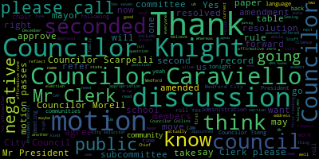
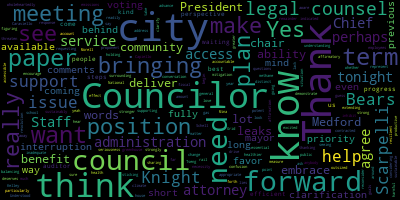
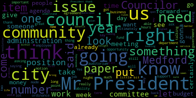
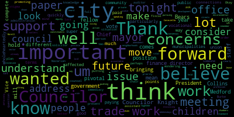

[Hurtubise]: meeting of the Medford City Council of 2022 will now come to order. Madam Clerk, please call the roll.
[Unidentified]: Councilor Bears?
[Hurtubise]: Present.
[Unidentified]: Councilor Cabrera? Councilor Scarpelli?
[xyqJQrsXvc0_SPEAKER_27]: Present.
[Hurtubise]: Present. Thank you. Councilor Morell? Fantastic. Councilor Morell is participating by Zoom, so all votes have to be roll call votes tonight. Alrighty, onto the agenda. Oh, actually, please rise for the Pledge of Allegiance. I pledge allegiance to the flag of the United States of America, and to the republic for which it stands, one nation under God, indivisible, with liberty and justice for all. Okay, this is the five minutes every year where I get to preside over the council meeting, and the goal is to set a record and be less than five minutes this year. So item number one on the agenda, 22001, is election of a council president for 2022. And I will turn it over to, are there nominations?
[Bears]: Mr. President, I'd like to nominate Councilor Morell for president.
[Hurtubise]: Councilor Bears has nominated Councilor Morell for president. Councilor Morell, do you accept nomination? Council member, do you accept nomination? We have a Zoom issue.
[Scarpelli]: There's a baby crying in the background.
[Morell]: Apologies, my Zoom froze at a very inopportune time. I'm here.
[Hurtubise]: You're here and you've been nominated for president. Do you accept nomination?
[Morell]: I do accept. Thank you. Apologies. First time I Zoom froze. Perfect timing.
[Hurtubise]: Congratulations on your new arrival.
[Morell]: Thank you. Thank you. Thank you all for bearing with me as I navigate the space with a one week old. And thank you for allowing me to join by Zoom and bearing with me.
[Hurtubise]: Is there a second on Councilor Morell's nomination?
[SPEAKER_13]: Second.
[Hurtubise]: Councilor Tseng has seconded. Are there any further nominations for council presidents? Is there a motion to close nominations?
[Bears]: Second.
[Hurtubise]: Councilor Cabrera has a motion to close, second by Councilor Bears. The vote is for the nomination of Nicole Morell for council president. Madam clerk, please call the roll.
[Bears]: Don't we have to vote to close nominations technically?
[Hurtubise]: Uh, let's vote to close nominations. Just sorry, everyone. Let's vote to close nominations. Councilor Bears a second it. Madam Clerk, please call the roll.
[Unidentified]: Yes. Yes. Yes. Yes.
[Hurtubise]: Yes. And now there is a motion on the floor to nominate Nicole Morell as council president for 2022. And on that, Madam clerk, please call the roll.
[Bears]: Nicole Morell.
[Unidentified]: Nicole Morell. Nicole Morell.
[Hurtubise]: On a vote of six in favor and one abstention, Nicole Morell is elected Council President for 2022. Congratulations, Madam President.
[Morell]: Thank you all. Very much appreciated. I look forward to serving and working hard for you all. And again, I appreciate just the moment of pause and joining by Zoom as I navigate a space I know many of you have been through first time for me. So I thank you and I'm excited to lead the council and continue to work with all of you and work for the first time with some of you.
[Hurtubise]: And Matt president, while I have you, I'm going to administer your oath of office, which is valid via zoom as long as you sign the document at some point in the next few days.
[Morell]: Great.
[Hurtubise]: All right. So I'm going to ask you to raise your right hand and repeat after me. I Nicole Morell do solemnly affirm.
[Morell]: I Nicole Morell do solemnly affirm.
[Hurtubise]: That I will faithfully and impartially.
[Morell]: That I will faithfully and impartially.
[Hurtubise]: Discharge and perform.
[Morell]: Discharge and perform.
[Hurtubise]: All the duties.
[Morell]: All the duties.
[Hurtubise]: Incumbent upon me.
[Morell]: Incumbent upon me.
[Hurtubise]: As President of the Medford City Council.
[Morell]: As President of the Medford City Council.
[Hurtubise]: According to the best of my ability.
[Morell]: According to the best of my ability.
[Hurtubise]: And understanding.
[Morell]: And understanding.
[Hurtubise]: Agreeable to the rules and regulations of the Constitution.
[Morell]: Agreeable to the rules and regulations of the Constitution.
[Hurtubise]: The laws of this Commonwealth.
[Morell]: The laws of this Commonwealth and the ordinances of the city of Medford and the ordinances of the city of Medford.
[Hurtubise]: Congratulations, Madam President.
[Morell]: Thank you.
[Hurtubise]: The next item on the agenda is the election of a council vice president for 2022. Are there any nominations for vice president?
[Morell]: I nominate Councilor bears.
[Hurtubise]: Okay, President Morales has nominated Councilor Bears. Councilor Bears, do you accept nomination? Yes. Councilor Bears has accepted nomination. Is there a second? Second. Councilor Caraviello-Biela has seconded the nomination. Councilor Knight has moved to close nominations. Is there a second? Second. Councilor Scarpelli has seconded. Madam Clerk, please call the roll on closing nominations.
[Collins]: Councilor Bears?
[Hurtubise]: Yes.
[Collins]: Councilor Capiello? Yes.
[Collins]: Councilor Schell-Kelley?
[Unidentified]: Yes.
[Collins]: Councilor Tseng? President Bears??
[Hurtubise]: Yes. The vote is 7-0. The nominations are closed. The next vote will be on the election of a Council Vice President. Councilor Bears has been nominated as Council Vice President. The nomination has been seconded. Nominations are closed. Madam clerk, please call the roll.
[Bears]: I abstain.
[Caraviello]: Isaac B. Zack bears.
[Knight]: On a vote of six in favor and one and one abstention.
[Hurtubise]: Councilor Zach Bears is elected Council Vice President for 2022. Congratulations.
[Bears]: Thank you all. And my grandfather is looking down especially happy with Councilor Knight and Councilor Tseng for saying my full name. So thank you very much. Look forward to working with you. Thanks.
[Hurtubise]: And I'm going to administer your oath of office. Which you can do from there or from here? from that first step or a lot of stuff like that. I, Isaac B. Zach Bares, do solemnly affirm that I will faithfully and impartially discharge and perform all the duties incumbent upon me as Vice President of the Medford City Council, according to the best of my ability and understanding. and understanding, agreeable to the rules and regulations of the Constitution, agreeable to the rules and regulations of the Constitution, the laws of this commonwealth, the laws of this commonwealth, and the ordinances of the City of Medford. And the ordinances of the City of Medford. Congratulations, Mr. Vice President.
[Bears]: Thank you.
[Hurtubise]: Item 22- I want to, before you start, I'd like to thank the assistant clerk. Sylvia DiPlacido, thank you very much for sitting in tonight, appreciate it. And for all your effort when I was out. So, thank you.
[Bears]: Item 22-003 is, I sponsored it, so if Councilor Caraviello would be so kind to share the next couple of items.
[Caraviello]: I'm like a bad penny I can't go away. 22003 offered by Council of this being resolved at the standing rules, standing committee rules be adopted as standing rules of the city council and so far as they are applicable comes up as.
[Bears]: Thank you, Mr. President. I believe this resolution is a standard operating resolution of the council to extend our council rules from the previous session to the current session, and I move approval. The motion by Councilor Behr, seconded by Councilor Scarpelli.
[Caraviello]: Mr. Clerk, please call the roll.
[Hurtubise]: Vice President Paris. Yes. Councilor Caraviello, oh, actually you're resigning, sorry. Councilor Collins.
[Collins]: Yes.
[Hurtubise]: Councilor Neider. Yes. Councilor Scarpelli. Yes. Councilor Tseng.
[Unidentified]: Yes.
[Hurtubise]: President Morell.
[Caraviello]: Absence. I can't see.
[Hurtubise]: Okay, I can't.
[Caraviello]: I used to have a big screen I can't I can't see it.
[Caraviello]: Assembly affirmative motion passes. 22-004 offered by Councilor Bears, be it resolved that the city council transfer all papers and committees on the table from 2000 to 2021 council to the 2022 Councilor Bears.
[Bears]: Thank you again, Mr. President. This is another standard operating procedure, taking all of the papers that have been committee or on the table in our previous session and advancing them to this session and I move approval.
[Caraviello]: On motion by Councilor Knights, seconded by. Then we'll make council call Mr. Clerk please call the roll.
[Hurtubise]: Yes. Yes. Yes. Yes.
[Unidentified]: Yes.
[Caraviello]: Yes, 70 in the affirmative, motion passes.
[xyqJQrsXvc0_SPEAKER_27]: If I may add also 22, 12 and 13. On the motion by
[Caraviello]: Councilor Knight, to suspend the rules, take papers out of order. Seconded by? Second. Seconded by Councilor Pearce. Mr. Clerk, please call the roll.
[Hurtubise]: Councilor Pearce?
[Caraviello]: Yes.
[Hurtubise]: Councilor Collins? Yes. Councilor Knight? Yes. Councilor Scarpelli? Yes. Councilor Tseng?
[Unidentified]: Yes.
[Hurtubise]: President Rowe?
[Unidentified]: Yes.
[Hurtubise]: Councilor Caraviello? Yes.
[Caraviello]: Okay, 22-010 offered by Councilor Biz be resolved by the Medford City Council. The rules of the Medford City Council be updated to strike the following meetings. Rule two, regular meetings of the City Council shall be held weekly on Tuesday evening at seven o'clock in the PM, except there shall be one meeting during the months of July and August, and there shall be at least two meetings in September. They shall be held in Council Chambers, and replaced it with meetings. Rule two, regular meetings of the City Council should be held every two weeks on Tuesday evening at seven o'clock PM, beginning on the first Tuesday in January, and there shall only be one meeting during the months of July and August. Meetings shall be held in Council Chambers. Meetings of the Committee of the Whole shall be scheduled by the Council President. meetings of subcommittees shall be scheduled by the subcommittee chairperson. Scheduling preference of the meetings of the committees and subcommittees shall be on Tuesday and Wednesday evenings, beginning at six o'clock PM. Councilor Best.
[Bears]: Thank you, Mr. President. The intent of this resolution is to open the discussion of the idea of moving to a different meeting schedule. I do know that in the past councils, this has been entertained. I believe several councils ago, Councilor Camuso, Councilor Miyako had considered moving to meeting three weeks and then the fourth week of the month being for Committee of the Whole. As this is just intended to start a conversation, my intent here is to move to refer this to the Subcommittee on Rules for further discussion.
[Caraviello]: On the motion by Councilor Bears to send this to the Subcommittee on Rules. Second. Seconded by Councilor Morell. Do we have any discussion on this? Do we move on? No. On the motion by Councilor Bears, Mr. Clerk, please call the roll. refer to the- If I can, Mr. President. Sorry? If I can. Councilor Scott Felder.
[Scarpelli]: I thank Councilor Bears for bringing this forward. I just think that, just to make it clear, I know that I did get a few phone calls in regards, and I appreciate this going to subcommittee, because I think it is something that's important that's being vetted. So, you know, the fear is that will we get enough business done in two meetings a month? And the biggest question is really, The ability for again, which was said many times to the people's forum that. gives people a chance every week to come to the podium that have to express a concern or an issue that comes before them. So these are the, these are some of the topics we'll talk about during the subcommittee. I think that this is getting the ball rolling and making sure that we have deep dialogue to make sure that residents get involved and attend that subcommittee. And when it's, when we, know, share your concerns. I know that I've received a few phone calls and a few emails in regards to the fear of losing that venue where a resident has a place to speak on a weekly basis. So again, I've I look forward to the subcommittee meeting and welcome all the residents that emailed me and called that had concerns to come out and share your concerns and that, you know, I think are valid. And I also understand, coach, Councilor Bears is, Vice President Beas is, you know, thought process to get that dialogue going. So thank you. Any discussion?
[Caraviello]: Okay, on a motion by Councilor Bears, seconded by Councilor Knight. Mr. Clerk, please call the roll.
[Unidentified]: Yes.
[Unidentified]: Yes.
[Hurtubise]: Yes. Yes. Motion passes.
[Caraviello]: 22011 offered by Councilor Morell and Councilor Bears, be it resolved by the members of the committee that the rules of the Medford City Council be updated to strike the following committees. Rule 34, after the organization of the council, the president of the council should appoint members to the following committees. Committee of the whole on finance and budgets to consist of a committee of the whole meeting wherein all members of the city council meet with the president, provide a chairperson.
[Bears]: Second.
[Caraviello]: On the motion by Councilor Knight, do you have a brief synopsis by the person who presided on this, Councilor Morocco?
[Morell]: Absolutely, so the intention here is that the current subcommittees don't, what is in the council rules don't reflect the current subcommittees. So this would allow us to update those subcommittees and also allow us to be nimble in the sense of, you know, reflecting the names of offices in city hall and just appointing people related to the subcommittee. So just modernizing the subcommittees, especially since they don't actually reflect the current subcommittees that are doled out.
[Bears]: And if I may. Thank you, Mr. President. In addition to what Councilor Morell said, the updated language would reflect how subcommittees have been created and appointed, at least as long as I've been Councilor, and I think longer than that. There's another resolution on here to review the full Council rules. So, you know, it's possible that we can make additional updates, changes, put a number of standing committees back in there. Again, the intent here is to just reflect how committees and subcommittees are appointed, created and appointed by and the members and chairs appointed by the President of the Council.
[Scarpelli]: Hey, I can Mr. President. Also, like, if we can maybe entertain tabling this for committed a whole meeting where we can really get the input of residents and we can really vet this process as we go forward. I know that there are some of these subcommittees that, you know, I'd like to, as we just started, maybe, you know, bring in the school committee and ask their opinions, especially when, as a former member of the school committee, whenever you not that I felt this way, but some council, some committee members felt that when you did a combined subcommittee, a committee that it might overstep a bound and there might be some animosity. Now that not saying that it is or isn't, but this is something that it'd be nice to sit with, you know, sit with the committee members and I get some input. I know that I did get one city school committee member called me to remind me when we tried to do that years ago, which I didn't, I didn't see it being a problem, but it is, it is a change. And I think that it's something that I like to see in, you know, in a process where we could just discuss this as just this being the topic of the conversation. So, you know, making a motion to- Yeah, if I could send this to, I mean, rules or the committee of the whole- Yeah, with this involves all councilors should go to the committee.
[Bears]: So, if I may, just to say that, you know, these do not reflect the current committees and subcommittees in 2020, 2021. And the intent here is really to say, hey, I think personally, how I feel is to actually put into the rules what we have done for the past two years and say, you know, the president will create subcommittees. Some of them are certainly, we certainly have some of these, but we don't have a school buildings, we don't have a school racial balance, we don't have public utilities, for example. And there are some subcommittees we do have right now that aren't reflected in this list. So, so you know the intent here is, is, I agree with you to have a discussion about this in the future that's actually what my next resolution is about, but just in between now and then, to make sure that the current president can appoint subcommittees in the interim, so it's not meant to be a permanent, you know, this is how it's going to go from here on out it's just, you know, I think it could be argued, right, that last term, Councilor Caraviello appointed a set of committees that aren't reflected in here. Is that against the council rules, you know? So that's all this is meant to be, is kind of temporary to say, we can appoint committees for now, and then we can also have those discussions.
[Scarpelli]: Right, I completely understand. And I agree with, you know, with most of the subcommittee, the new subcommittee, you know, changes, but I think that really it's understanding each one with the vision of the President and what direction we're looking to go with when you're, you're talking and getting the input from, you know, our residents that that elected us to say, for instance, the school and racial balance, I think that's, you know, something that we need.
[Bears]: Those are old.
[Scarpelli]: Right, right. So we want to change those two.
[Bears]: All this does this is actually taking all of the uh listed committees out of the current rules right and just changing it to the president shall form committees and the subcommittees and appoint chairpersons and members right okay so i think that's my confusion is like the the understanding of what
[Scarpelli]: what is the change going to be. And if we're allowing the president to do that, and it's presented in a way that might have some animosity toward another city body, I think that's the concern that before doing that is understanding what the president's definition of each new title is. So I think that would be my only... Well, common practice is the president usually asks the members what committees they'd like to be on.
[Caraviello]: You don't want to put people on a committee they don't want to be on. So I know when I was president, I'd always ask everybody, what committee do you want to be on? And the president hopefully tries to make everybody happy.
[Morell]: Yeah, if I could, Councilor Caraviello, And I absolutely hear what you're saying, Councilor Scarpella, and I think that's valid, and those are conversations that need to be had. I just don't want to, I think Councilor, Vice President Bears has the same concern. I don't want to inhibit, somehow inhibit ourselves from being able to form the subcommittees, particularly if we're sending things to rules right now, get stuck in kind of a catch-22 where we can't have that rules subcommittee because we're trying to hold for this committee of the whole. So I'm curious if the language, if you would be satisfied the language were clarified, that this is something we'll you know, have a meeting about down the road, but it doesn't inhibit the president from forming subcommittees, you know, in the interim.
[Knight]: Yes, Mr. President, I see this nothing more as, you know, streamlining the way that we do business a little bit. Ultimately, I think it's safe to say that The President has always been given some flexibility and leeway in establishing subcommittees, whether or not they outlined in the rules or not. So I think what we're really doing is kind of splitting hairs a little bit over an issue here that's not really that big of a deal right ultimately. We have a number of subcommittees. My first term, when I was elected, Councilor Camuso and I went over the list, and I recommended that he create a number of different subcommittees, and he just created them. We didn't have to go through rules change or anything like that. So when I'm looking at this, I think, you know, we talk about some of the ad hoc committees that we've voted on to allow the president to have discretion to create. You know, I don't think this is anything that's outside the norm of the power vacuum that we've allowed in the past. So I certainly have no problem with it, Mr. President, ultimately. You know, we have a number of items on relative to the rules, the rules will be reviewed. But in terms of, you know, committees and committee structure and the standing committees, I don't think it's. worth getting into a hours long debate over it when historically, you know, the flexibility has been there for the President to take such action. So with that being said, I certainly wouldn't question the Council President's authority in appointing the subcommittees that are currently standing, the ones that we've, you know, we just transferred all the papers over that are in the standing committees now. So those standing committees need to be chaired. We just voted on that. That was the second paper we did. So ultimately, at the very least, the council president should have the ability to, at the very least, chair those subcommittees. And then if this is going to be an issue we can deal with in the future. But in terms of allowing us the ability to continue conducting business, I don't think that this is something that you get in the way of that. So I don't want this to be something saying, you know, we can't do anything anymore until we figure out who's going to be the chairman of the rules committee, the licensing committee, because we just took a vote to transfer all those papers that are in those committees over this year. So those committees right now are already standing committees. We took a vote on that. So I think we're really kind of beating a dead horse.
[Scarpelli]: So Mr. President, if I can, I agree with Councilor Knight saying if it's standing committees, I'd support that. But I said, I think the question that we had were, if we're allowing the president to make some change. I think that has to be a discussion before. I think the standing committees I would support, but as we're moving forward to change or to add different committees, I think it's something that I wasn't privy to Councilor Knight's first few years and Councilor Camuso's, but I know what we've done here has worked in the sense that it's been transparent. I'd say that Councilor, President, I was not transparent and what I'm saying is having that extra meeting to talk about the new committees, I think, if there are, that'd be important. Other than that, I agree with Councilor Knight that we can move forward with the standing committees. I agree with that. Chair, would you like to support that?
[Bears]: If I may. I would prefer to vote on this tonight. And that doesn't mean even if it were to pass, that we wouldn't have those discussions and they wouldn't come up with a new structure as we review the rules. And I just want to say, so if it goes, if it goes mixed, whatever, it's not unanimous. I just want to say either way, we're going to have the discussion and we're going to. We're going to get it going.
[Scarpelli]: And I think it goes both ways. So it is. That's why there are there are seven votes and there's no animosity behind it. We just move forward in a positive light.
[Caraviello]: You have to give the president the flexibility. to appoint the committees that she feels that she wants to work people in.
[Scarpelli]: Don't disagree. I think that Councilor Knight said they'd support all the standing committees, but I'd like to, any new committees is just to have a committee of the whole meeting, just to discuss those few meetings. And again, Councilor Morell's a voted president, and I think it's just having that layer of discussion. So other than that, move forward.
[Bears]: I believe you made a motion. I don't know if there was a second, but I would move approval unless there's a second on your motion.
[Caraviello]: Councilor Scarpelli, you had a motion on the floor. I didn't hear a second, so.
[Bears]: Seconded by.
[Knight]: of the Committee of the Whole is going to be the establishment of what the new committees are going to be, then yeah, I don't have a problem having the Committee of the Whole in that, provided that the existing and standing committees still stand, you know. I'm not in favor of that whatsoever. We already verb that in standing array, so they're already in place. If the councilor has questions and wants to vet it, I don't have a problem providing that opportunity.
[Scarpelli]: With the new committees.
[Knight]: I'd certainly second the motion with the understanding that the other standing committees will still be filled.
[Scarpelli]: And that would be my motion, that the committee We think it should be passed and we would have a committee of the whole discuss. On the new committees. On the new committees. That's all.
[Caraviello]: On the motion by Councilor Scapelli, seconded by Councilor Knight. Any further discussion? We refer this to a committee of the whole to discuss the new committees. Mr. Clerk, please call the roll.
[Hurtubise]: Vice President Bears. No. Councilor Collins.
[Collins]: No.
[Hurtubise]: Councilor Naik. Yes. Councilor Scarpelli. Yes. Councilor Tseng. No. President Morell.
[Morell]: No.
[Hurtubise]: Councilor Caraviello. Yes. Three in favor, four against.
[Caraviello]: Three in favor, four against, motion fails.
[Bears]: I would motion to approve as written.
[Caraviello]: On the motion by Councilor Bears, seconded by? To approve. Seconded by Councilor Collins. Mr. Clerk, please call the roll.
[Hurtubise]: Vice President Bears. Yes. Councilor Collins.
[Collins]: Yes.
[Hurtubise]: Councilor Knight. Councilor Scarpelli. No. also saying, Yes, Councilor Morell.
[Unidentified]: Yes.
[Caraviello]: 2-2-0-1-2 offered by Councilor Bears. Be it resolved by the Medford City Council that the rules of the Medford City Council be reviewed, updated, and modernized. Vice President Baez.
[Bears]: Thank you, Mr. President. This continues kind of the conversation we've been having here. The intent of this resolution is to, and I will make a motion at the end of my statement, is to refer this to the Rural Subcommittee to discuss, review the city council rules, you know, maybe at a table of contents, maybe maybe it's time we can officially take out the no smoking behind the rail rule. Um you know, so, I think we're, I think we're a smoke-free building for sure. Um so, so, you know, there's there's quite a bit of stuff we could look into just maybe make it better organized, review what's in there, what's relevant, and again, specifically on these questions of subcommittees, look at and and you know, I think how we'd go, we'd have a real subcommittee, then we'd have committee of the whole, talk about it as a whole council, and really look at a structure that reflects what we've been doing going forward. So that's what this resolution is about. I had a motion to refer this to the rules subcommittee, and thank you, Mr. President.
[Caraviello]: On the motion by Vice President Bears, seconded by Councilor Knight. Any further discussion? Mr. Clerk, please call the roll.
[Hurtubise]: Vice President Bears. Yes. Councilor Collins. Yes. Councilor Knight. Yes. Councilor Scarpelli. Yes. Councilor Tseng. Yes. President Morell. Yes. Councilor Caraviello. Yes.
[Caraviello]: 7th affirmative motion passes. 22013 offered by Councilor Bears be it resolved that the City Council review the creation of the Election Commission through the acceptance of Mass General Law Chapter 51, Section 16A. Vice President Beas.
[Bears]: Thank you, Mr. President. many communities, well, I'll start here. Chapter 51, section 16A allows for cities to adopt a piece of mass general law, which would allow us to move to the system of having an elections commission. It would move us from having the clerk and the board of registrars model to a formal elections commission. I think there's a variety of reasons that we that at least I think that would be a good idea. And, you know, may also reflect some, some of the changes we've been talking about in general around elections, with it being more work and then we now have an elections coordinator and it really is its own own. animal, if you will. So part of what this allows this this section of mass general law allows us to do is basically if we were to adopt it, it would immediately transfer our Board of Registrars of voters to becoming a board of election commissioners. the clerk position would then come off of that board and any appointments going forward, the mayor would make those appointments subject to the approval of the of the city council. Um so, my motion here is to refer this to a committee of the whole so that we can discuss this with the city solicitor, with the clerk, with the relevant folks from from our the way that we should move forward. I can just say from my reading of the law and also from seeing which communities have adopted this it does seem like this is the way that the state law it's kind of pushing communities towards this model and away from the older clerk registrar voters model at least that's how I read the general law. I just think it's another example of something we can do, adopt state law and already allows communities to do this, to move forward on administration of elections. So again, move to refer this to a committee that will refer the discussion.
[Caraviello]: On the motion by Vice President Bears, seconded by Councilor Knight. Mr. Vice President, this is something myself and Clerk Hurtubise had a discussion with the Mayor, I think earlier in the year. In June, I think, with the Mayor and former Chief of Staff Rodriguez about getting this career, this position created. I agree with that. I think this is something that should be done. I think it still falls, technically still falls under the clerk's office, but it takes the burden off of him and of the clerk and it puts it into another thing. I support this. Yes, yes. I think it's a good idea. Yeah.
[Bears]: The clerk would no longer be a registrar.
[Caraviello]: And again, the job of the clerk certainly isn't the job that we when we hired clerk for four years ago, we weren't doing early voting, we weren't doing weekly voting, so obviously now the job has changed significantly since the clerk has started. So on the motion by Vice President Bears, seconded by Councilor Knight, any further discussion? Mr. Clerk, please call the roll.
[Hurtubise]: Vice President Bears. Yes. Councilor Collins. Yes. Councilor Knight. Yes. Councilor Scarpelli. Yes. Councilor Tseng. Yes. President Morell.
[Unidentified]: Yes.
[Hurtubise]: Councilor Caraviello.
[Caraviello]: Yes, 70 affirmative motion passes to choose everyone for offered by councilor on council appears to be resolved that Medford City Council, uh, the city explored joining the state's paid family in medical leave program to provide a necessary benefit to the city and school employees. Be a further resolved that the Medford City Council review the relevant state statutes for the city solicitor including acceptance of national law chapters 175m section 10 required to join us. President Morel.
[Morell]: Thank you, Councilor Caraviello. So this is a space, apologies, this is a space that Medford can be a leader in. So this is a program that the state recently passed, something that I'm benefiting from right now that I'm on paid family leave through my day job at MIT and something that I think through the political process, unfortunately, municipal employees were sacrificed. The cities have to opt into this program. Medford would be among the first. I think one of the first, I think cities are looking at this. They have the ability to opt in. There's a lot of discussion. There's an outline process to join this, but it would allow our municipal pool employees to have those same benefits that are being extended across the state. And we've talked a lot about the value of our city employees. We've talked a lot about attracting top talent, And, you know, just valuing our employees as human beings with full lives. And this is something that absolutely would affirm that, would give people the time off they need for expanding their family, for a sick family member, for all of the things outlined in paid family medical leave. And I think this is something that we absolutely have to look into as a city because it's the right thing to do. But also, as I said, it will attract talent. It will give them the chance to be a leader. So my motion, I would move to move this to committee of the whole, invite, you know, the city solicitor, chief of staff, I think human resources to see how we can implement this as a city.
[Caraviello]: Thank you.
[Bears]: Thank you, Mr. President, just to add to what Councilor Morell was saying, you know, I was in the room, my organization was part of Raise Up Massachusetts when we were negotiating what exactly are we going to look at for paid family medical leave and the $15 minimum wage, and it was kind of a hectic morning. getting phone calls back and forth from the leadership and the legislature back to us, what's in, what's out. And one of the things that was left out on both of those fronts, and we've discussed one of the other ones here before, was city and school employees. They were left out of the paid family medical leave, and they were left out of the $15 minimum wage because it was said that this was an unfunded mandate on cities. There is again this chapter 175 M section 10. It's an adoption of state law that this council that gives the authority to councils or whatever the equivalent body is in another community to join the paid family medical leave program for the state. We would be the first in the Commonwealth. I think that is a good thing. I think that puts us in a competitive position with a lot of other communities, especially right now in this job market, when top talent is going all over the place and looking for the best thing. And the other thing too, it puts us in a more competitive position with the private sector. I actually just was speaking with a family of someone who is now working for the city, previously was in the private sector. When they were in the private sector, they paid into this program, now they've moved to the city, they're at a moment in their family history where it'd be great to be able to take advantage of this, and they just found out they're no longer eligible because they work for a municipality. So certainly there are things to work out, look at the law, look at the process, and obviously there'll be a budgetary impact, but I think it's something that would be good for our city and school staff 100%. So I would second Councilor Morell's motion to refer this to Committee of the Whole.
[Knight]: Councilor Knight. Mr. President, thank you very much. This is something that I support wholeheartedly. Councilor Bears has brought up two issues that are very important to me. The $15 minimum wage for city and school department employees and also a sick leave bank ordinance for city and school department employees. These are two items that I brought up two years ago, asking to draft ordinances from our city solicitor appointment. and they must be very long pieces of municipal legislation, Mr. President, because it's been 24 long months, and this body's not received draft ordinances of either one of these items. So here we are this evening, and we're gonna have a paper asking us to further fund legal services in the administration, to further fund the legal service line item, to expand the budget for this fiscal year. This is a perfect example, Mr. President, of why this council needs its own legal counsel. This is an item that should have been addressed long before, long before today. This is an item that we could have handled through municipal ordinance that would have provided a sickly bank program for municipal employees and school department employees, just like they offer to state employees. Merit on the state legislation of which I printed out, drafted and submitted to the city solicitor's office when this ordinance proposal was made. So with that being said, Mr. President, I thank the councilors for bringing this measure forward. It's something that will benefit a number of workers here in this community, and it's something that I support wholeheartedly. I don't need a meeting with the solicitor or anybody else to know that this is something I'm going to support. What I need a meeting with the solicitor for is to make sure that when I vote for it, we vote for it the right way, so it's implemented properly.
[Scarpelli]: Councilor Scarpelli. Thank you for, my fellow Councilors, bringing this forward. I think Councilor Knight remembered this very vividly because I'm like my, my, my first year colleagues, which I don't know the background yet but I'm fortunate to work in a municipality that that people don't might not understand is that the sick bank is so important for brothers and sisters that you work with. that fallen ill for some serious health issues and employees that have occurred sick days that can give back to those that are in need for that. So I think it's so important and something that simple, you think that the Family Leave Act is just automatic in different municipalities. And so it's enlightening to a few members in the community thinking that don't we already have this? And it's something that, you know, I appreciate my council's bringing this forward and something I will support and I look forward to the community to hold me. So thank you.
[Caraviello]: So on the motion by Councilor Morell and Councilor Pence.
[Collins]: Thank you, Councilor, thanks. not to drive the conversation out further, but I just want to thank President Morell, Councilor Bears for bringing this forward, Councilors Knight and Scarpelli for their words of affirmation. I think that this is an issue that really deserves a lot of affirmatory words. I think this is a really essential benefit. I would love to see this council embrace it, encourage the city to embrace it, because this is a measure that could, through extending this benefit for our city and school employees, help to make the city healthier and stronger and more resilient community, which is what we're here to do. So thank you for bringing it forth. I'm excited to advance it.
[Tseng]: Thank you. I wanted to thank as well, President Morell and Vice President Bears for bringing this forward. I wanted to reiterate my support for this for this paper. And I wanted to thank my fellow city Councilors for, you know, already speaking up on so much that matters to me. This is definitely an important piece of important action going forward when we consider how we are going to draw talent to our city to work for our city. how we're going to compete with different municipalities and how we're going to compete with the private sector as well. I think it's important to also remember that, you know, paid paid leave is pivotal, pivotal for the development of children who are future, and that's why this is particularly, particularly important to me.
[Caraviello]: Thank you. And again, there's some this council has supported in the past and will support again. And again, it's good for the people, it's good for the families. Any further discussion? So on the motion by Councilor Bears and Council President Morell and Vice President Bears, seconded by Councilor Knight, Mr. Clerk, please call the roll. And this is to move to Committee of the Whole, correct? Move to Committee of the Whole.
[Hurtubise]: Vice President Bears?
[Unidentified]: Yes.
[Hurtubise]: Councilor Collins? Yes. Councilor Knight? Yes. Councilor Scarpelli?
[Unidentified]: Yes.
[Hurtubise]: Councilor Tseng? Yes. Yes.
[Caraviello]: Yes, that'd be the affirmative motion passes motion.
[xyqJQrsXvc0_SPEAKER_27]: From 18 when whenever Winchester related to GMT pizza. I'm hoping that we can take this item out of order as well.
[Bears]: One second, everybody. All right, so we had paper. 21-021, petition for a convictual license by Michael LaChapelle, 18 Glenwood Avenue, Winchester, Massachusetts, 01890 for GNP Pizza, 51 High Street, Medford, Massachusetts, 02155. Councilors, do I need to open the hearing? We'll go to the Chair of Licensing.
[Scarpelli]: Thank you, Mr. President. Now we see this is just a business that is a pizza restaurant, I believe. Is the petitioner online?
[Bears]: Mr. LaChapelle, are you on the line, or do you have a representative?
[SPEAKER_13]: Hi, yes, I'm here. It is an existing pizza restaurant.
[Bears]: Can we just have your name and address for the record, please?
[SPEAKER_13]: Sure, it's Mike LaChapelle at 18 Glenwood Ave. in Winchester, Mass.
[Bears]: Thank you.
[Scarpelli]: Mr. President, I know my colleagues have some questions. I see all the paperwork is present in order for approval, so.
[Bears]: Yes, Councilor.
[Knight]: I've personally known Michael for a number of years, probably the better part of 10 years, Mr. President. His wife's a business owner here in the community as well. She runs a law office right down in Medford Square. And Michael's looking for an opportunity to continue in his wife's footsteps and be a business owner in the city of Medford. We all know GNP is a wonderful establishment here. It's some of the best pizza that you can get in the city of Medford. And I think this is gonna be a great opportunity for Mr. LaChapelle to partner up. with one of our existing successful businesses and expand upon the successes that we've seen there, Mr. President. So with that being said, I certainly have no problem by supporting this document, this paper that's before us. Like I said, I've known the gentleman for a number of years in a professional and personal capacity, and he's someone that I believe will bring a number of great assets to our community.
[Bears]: Thank you, Councilor Knight. Any further discussion? Motion approved. Motion from Councilor Caraviello, seconded by?
[Unidentified]: Seconded.
[Bears]: second by everybody, but with Councilor Knight. And if I may, just before we call the roll, I used to work at Rosa's in the same location. So I'm familiar with the location and I wish you all the best. No, I know.
[Unidentified]: Thank you all.
[Bears]: Mr. Clerk, please call the roll.
[Hurtubise]: Councilor Caraviello. Councilor Collins. Yes. Councilor Knight. Yes. Councilor Scarpelli. Yes. Councilor Tseng.
[Bears]: Yes.
[Hurtubise]: President Morell. Yes. Vice President Harris.
[Bears]: Yes. That is seven in the affirmative, zero on the negative, and the motion passes. Motion on the floor, revert rec to regular from Councilor Knight, seconded by Councilor Caraviello. Mr. Clerk, please call the roll.
[Hurtubise]: That's a care bill.
[Unidentified]: Yes.
[Hurtubise]: Councilor Collins. Yes. Council night. Yes. Councilor Scarpelli. Yes. Councilor Tseng yes. Vice President Bears.
[Bears]: Yes, seven in the affirmative, zero in the negative. Motion passes. 22-005 offered by Councilor Knight. Whereas Medford City Hall closes on Wednesday evening at 7.30 PM and on Friday afternoon at 12.30 PM.
[Knight]: Mr. President, I'd be happy to give a brief synopsis if someone would like to waive the reading.
[Bears]: Is there a motion to waive the reading? So moved by Councilor Scarpelli. Councilor Knight.
[Knight]: Yes, Mr. President, this is my biannual attempt to have a meeting night change from Tuesdays to Wednesdays. Ultimately, because we have an open meeting while it requires 48 hours of posting, the City Council is required to get its agenda items into the City Clerk by Friday, unless there's a holiday on that Monday, which would require us to get it in on a Thursday. Now we all know that the majority of events in this community in the majority of time that we are able to be free to interact with constituents occurs usually after the working hours on the weekends. So the situation I find myself in a lot of times Mister president is that the agenda has been published on a Friday afternoon and I'm down to Matt 7 a cup of coffee and someone comes in asking me to help with some. And I don't have the ability to bring that item to the table and put it on the agenda, because the open meeting requires that we have to have the meeting notice posted within 48 hours, because of Saturday and Sunday, not being included in the counting of those 48 hours, we lose two and a half days to get items onto the agenda. So this is nothing more than really, Mr. President, an attempt to allow us to do business a little bit quicker and to allow us the opportunity to put things on the agenda in a faster fashion. Also, when you think about this building, right, Wednesday night is the night the City Hall is open late. So instead of having City Hall being open on Tuesday nights just especially for the City Council meeting to meet this whole building for us to come in here to conduct our business, the building will already be open. The building will already be heated. There'll be personnel that's in here already. department heads they're already working late. So if we do need to talk to somebody we may have the ability to have them come right down and speak to us, Mr. President, we'll be able to get answers a little bit quicker. If we have committees as a whole, existing staff will already be on hand. So department heads won't be dragged in there on Tuesday nights to deal with council business and then also be dragged in again on a Wednesday night so that, you know, we can take their life into consideration as well. But I think that this is really just an opportunity for us to allow us to represent our constituents better because it gives us the opportunity to get the freshest items that are in our head and put them on the agenda immediately. After the weekend, we can put something on the agenda on a Monday, and it's gonna show up on the agenda for Wednesday evening. And I think that that's just a little bit more efficient and effective. So that's why I bring this matter forward. And with that being said, Councilor Bears and Councilor Morell have been so generous in their willingness to send items to the committee of the rules. I would be happy to make a motion to send this item there as well to be further discussed. I have brought it to the table before it has failed before. I would not like to see this fail again, so I'd be happy to deliberate and discuss with my council colleagues what they feel would be best direction for us to move.
[Bears]: Thank you, Councilor. There's a motion from Councilor Knight to refer this to the Committee on Rules. Is there a second?
[Unidentified]: Second.
[Bears]: Great. And any discussion? I had Councilor Scarpelli, then Councilor Caraviello, then Councilor Scarpelli.
[Scarpelli]: I appreciate, thank you, Council President. I appreciate Councilor and I bringing this forward. I think that it makes some valid points, but I think that talking to a few department heads, they've been accustomed to using that Wednesday evening that they are here when it might be a little bit slower. to really do the business that we we pass on on a Tuesday night for them to to to really get ahead of the game where Fridays they have a half a day they lose a half a day. So it kind of hinders that process so I appreciate that and You know I I think that you know it's something that be interesting to see as we share our thoughts and community that being on that point Mister president.
[Knight]: You know the mayor still would be bombed by our 10 day requirement to respond items that have passed by the House. So whether the meetings on the Tuesday or Wednesday the administration still about to act within the 10 days. The forecast right so if they use Wednesday's you know the employees and the staff is still required to work at 37.5 hours a week. whenever it may be, right? It's just a time management issue at that point, right? So the night of the council meeting should have no bearing on whether or not members of the administration can conduct the job that they're being paid to do within 37.5 hours a week that they're being paid to do it. Sure.
[Bears]: Thank you both. Councilor Carballo.
[Caraviello]: Thank you, Mr. President. Again, I thank Councilor and I for bringing this forward. I agree with Councilor Scott. I don't think Wednesday nights works for the council meetings. This room is booked many, many Wednesday nights for public hearings, multiple public meetings. And I think to have that on other nights, I think it would be disruptive to the community. Again, you know, these are the changes that, you know, that the city has been done for many, many years. I'm not saying that I'm opposed to change, but I say generally Wednesday nights, many meetings are held in this chamber because of just the fact that it's the biggest room in the city for us to have these meetings. And again, I don't oppose discussing this in the committee at all.
[Knight]: On that point, Mr. President, I think it's important to point out that the Council meetings are a public meeting as well. And this is the Council Chamber. And when we talk about the successes of just this past week, for example, we just cut the ribbon on one of Councilor Caraviello's greatest accomplishments as a Councilor, the library, which has a beautiful new community space. We look across the parking lot, we do see the Senior Center, which has a beautiful room in there that we've been able to use in the past. Back this way, we see the Shabbat auditorium. We get in the car and drive up the street, we see the little theater. So there are a number of spaces in this community that can host live gatherings. Again, this is more of an efficiency standpoint for the council and the ability for us to put it on the agenda. So with that being said, I don't think we need to beat the host to death, but there are some valid arguments for and against Mr. President.
[Bears]: Thank you all. There was a motion from Councilor Knight to refer to the subcommittee on rules, seconded by Councilor Morell. Any further discussion? Councilor Tseng.
[Tseng]: I just wanted to quickly thank Councilor Knight for bringing this forward. I think he makes valid points. I've heard from constituents about concerns about public meetings, community meetings being held in the chambers on Wednesdays. So I look forward to, I will vote yes on this and I look forward to discussing this even further.
[Bears]: Great. Any further discussion? Any discussion by members of the public? I am not seeing any, so Mr. Clerk, on the motion, could you please call the roll? And this is to refer to rules. To refer to the subcommittee on rules.
[Hurtubise]: Councilor Caraviello? Yes. Councilor Collins? Yes. Councilor Knight? Councilor Scarpelli? Yes. Councilor Tseng?
[Bears]: Yes.
[Hurtubise]: President Morell? Yes. Vice President Bears?
[Bears]: Yes. Seven in the affirmative, none in the negative, and the motion passes. 22-006 offered by Councilor Knight, be it so resolved that the Medford City Council hold a moment of silence in memory of Governor's Councilor Michael J. Callahan, a dedicated public servant who passed on January 6th, 2011, following five decades of public service to the people of Medford, and be it further resolved that this evening's council meeting be dedicated to his memory. Councilor Knight.
[Knight]: Mr. President, thank you very much. Michael was a mentor and a dear friend to me for a number of years, and I wouldn't be sitting here this evening if it weren't for the guidance that he gave me as a young man. He's someone that dedicated his life to public service, a Vietnam veteran, a governor's Councilor. 48-year state employee, commissioner of racing, chairman of the Medford Consumer Advisory Commission, founder of the Medford Consumer Advisory Commission, and most notably, Mr. President, famous in Medford folklore for saving Wrights Pond from being developed into condominiums in the late 70s and early 80s. And if you go up to Wrights Pond to this day, you'll see a memorial there in Michael's honor, recognizing the work that he did in protecting one of Medford's most beautiful natural resources. Michael was someone that served this community, this country, and this commonwealth with dedication and passion. He's someone that would be the life of the party if he walked in the door, you'd know he was here. He was someone that wore his hat and his sleeve and would give you the shirt off his back. And he's someone that's certainly greatly missed, Mr. President. He's someone that made a big impact in my life and someone who I think of often. And annually on this day, I bring this metaphor to Juan and my friend Michael, and I ask my council colleagues to join me in doing the same.
[Bears]: Thank you, Councilor Knight. Any further discussion? Yes. Thank you.
[Scarpelli]: I think those people who know Miss Callahan realize how important it was to our community. It was a deep loss when he, when, when he left us, and, but his memory lives on in, in Council night and I applaud that he does this every year. Because you don't know where you go until you know where you came from. And definitely Mike Callahan is a person who led the way here in Medford and supported us. So I second Councilor Knight's motion.
[Bears]: Thank you. Any further discussion? Just again, I agree with Councilor Scarpelli. Thank you for bringing this forward. We should vote and then have a moment of silence. So on the motion of Councilor Knight, seconded by Councilor Scarpelli. Mr. Clerk, please call the roll.
[Hurtubise]: Councilor Caraviello? Yes. Councilor Collins? Yes. Councilor Knight? Yes. Councilor Scarpelli? Yes. Councilor Tseng?
[Bears]: Yes.
[Hurtubise]: President Morell? Yes. Vice President Bears?
[Bears]: Yes. If everyone could please stand for a moment of silence.
[xyqJQrsXvc0_SPEAKER_27]: Thank you all.
[Bears]: Resolution 22-007 offered by Councilor Knight. Whereas gas distribution utilities are required to annually report the location of gas leaks to the Department of Public Utilities. And whereas as of December 31, 2020, there are reported 235 unrepaired gas leaks generating 104 tons of emissions annually in the city of Medford. And whereas independent research shows there are typically 1.5 to 3 times more leaks than reported. Be it so resolved that the Medford City Council request that city administration prepare and present a five year plan to address gas leaks in our community and report back to the council Councilor Knight, Mr. President, thank you very much.
[Knight]: I think this is a rather self explanatory resolution. We do have a problem in this community with gap with gas leaks, you look at these figures. These aren't figures that I made up the figures that I got right from the Department of Public Utilities. The research shows that there are typically 1.5 to 3 times more leaks than reported. It's not something I made up. It's something that I got right off the website of the Department of Public Utilities. So we're seeing a situation here in this community where we have a problem and we need to address it. We're seeing a lot of digging being done by our public utilities and we're not holding them accountable. We're not bringing our public utilities back to the table to be sure that they resurface our roadways in a condition that's suitable to the taxpayers in this community. It's something that needs to be addressed, Mr. President. So between the environmental issues that we have with the gas leaks, the safety issues that we have with the gas leaks, and the quality of life issues that we have with the condition of our roadways, I think that this is something that should be a priority. So I'm asking that the administration come up with a plan on how to address it. And I'd like to further amend the paper and ask that this be based on the reports due section of the council agenda for 90 days, Mr. President.
[Bears]: Do you have that, Mr. Clerk? do section nine days, as my council colleagues to support the resolution I look forward to the administration. Second, you have a motion from Council right seconded by Councilors Garfield a discussion, Councilor Caraviello.
[Caraviello]: Thank you, Mr. President. Thank you for bringing this forward. This is something that's been discussed at this Council. Many times in the past, the Council made is a percent correct. with all the unrepaired gas leaks leaking all over the city. I don't think there's any part of the city that's immune to this, what's been going on. And I think that we should have national grid here when we have the meeting to discuss this. I think they were here last time. And I think a couple of years we had a meeting, but the biggest part is that Councilor Lay mentioned is we're over here digging up our streets. and not repairing it. And I've been, I'm gonna tell you now, every time I see it, I call the engineer. Again, we've got newly done streets that we're digging up. So again, I think going forward, it's gonna be the job of this council to hold not only the gas company, electric company, the phone company, anybody that's gonna be digging up our streets are gonna be held accountable to pay them correctly. If they're not gonna be paid correctly, they're not gonna be getting any more permits. So I know I'm gonna stand firm on that. I'm tired of going around the city, seeing holes everywhere, just being left undone. And I think it's also a sign that we hire a clerk of the works to follow up. I mean, Tim McGibbon can only do so much work. He can't be the engineer, PPW director and be on the street. So again, I think this is something that this council is gonna have to hold strong on. If we're gonna start paving the streets, I think, and they wanna start digging them up, they're gonna be paving crib to crib like they do in other cities. So I wholeheartedly support Councilor Knight's motion.
[Bears]: Thank you, Councilor Caraviello. Is that an amendment to invite National Grid to the meeting? Yes, it is. All right. Thank you. If you could record that. Seconded by Councilor Knight. I'm gonna go Councilor Collins.
[Collins]: Thank you. Thank you, Councilor Knight for bringing this forward wholeheartedly support this resolution, as indicated, not only do these leaks account for an outsized amount of methane emissions, particularly potent greenhouse gas. These leaks inhibit our ability to deliver on our public health goals to the community of Medford. They also threaten our ability to demonstrate our seriousness about climate change mitigation. So I look forward to supporting the city administration and holding National Grid accountable and seeing what we can do to sustainably address this issue. Thank you.
[Bears]: Thank you, Councilor Collins. I actually have Councilor Morell and then our President Morell and then we'll go to Councilor Tseng. President Morell.
[Morell]: Thank you, Vice President Bears. I just want to thank Councilor Knight now I have a squiggly baby. I want to thank Councilor Knight for bringing this forward. I mean, this is an issue that, as you said, you hear from residents about this all the time. National Grid has their own ranking for how severe these leaks are and you'll have leaks that you can absolutely smell are concerning and they'll say it's not a priority. The Energy and Environment Committee also has a great map detailing the leaks that are all over the city and as you said it's an incredible amount. and a lot of them are unreported. So I just, I really appreciate you bringing this paper forward and I look forward to supporting it and getting something done on this.
[Bears]: Thank you, Councilor Morell. Welcome baby Jack. And, and we'll go to Councilor Tseng.
[Tseng]: I wanted to thank Councilor Knight on this, and thank Councilor Caraviello for his amendment. I think it's important that we, we hold strong together as a council on this issue that we hold hold people accountable for the work that they do in our city. This is clearly a standard of living issue. It's an environmental issue as Councilor Collins so well laid out. It's also an equity issue in terms of the neighborhoods that are affected, the streets that are affected, and the way that we address city services in Medford. And so I will vote to support this. Thank you.
[Bears]: Thank you. Any further discussion or discussion by members of the public? Seeing none, on the motion of Councilor Knight, seconded by Councilor Morell, I believe, or we'll go with Councilor Scarpelli. Mr. Clerk, please call the roll. For approval as amended. Yes, for approval as amended.
[Hurtubise]: Councilor Caraviello?
[Unidentified]: Yes.
[Hurtubise]: Councilor Collins? Yes. Councilor Knight?
[Collins]: Yes.
[Hurtubise]: Councilor Scarpelli? Yes. Councilor Tseng. Yes. President Morell. Yes. Vice President Bears.
[Bears]: Yes. 70 affirmative zero the negative the motion passes as amended to 022-008 offered by Councilor Knight. Be it so resolved that the city administration provide the council with a listing of vacant positions funded in current fiscal year's budget, and be it further resolved that the city council be provided with an organizational chart reflecting the transitional roles and responsibilities of existing employees until the aforementioned vacancies are filled Councilor Knight.
[Knight]: Mr. President, thank you very much again this is a paper that we put on annually requesting that the administration provide us with an update as to what the organizational structure is week after week we're seeing new jobs being proposed to this council new positions being proposed positions being upgraded. It's my hope that we can get an organizational chart to show us exactly who's doing what, when, and where. Just last week, I believe we had about $800,000 worth of new positions before us. So I think it's important for us to understand the financial impact of what's going on with the new positions that are being created in this community, both to the tax dollar and also to our grant funds that are coming from the feds. So with that being said, Mr. President, I would ask that this Council resolutions be answered in writing. I do think it's important that our council resolutions be answered in writing. It's great to have a representative from the administration here, but that does not make for my file. And when it comes time for me to pull this out and look at it again later on, it doesn't do me any good. It doesn't do me any help. It's really an issue for me to understand who does what, where our money is being spent, and why it's being spent there. And it also allows us as councillors to know who to pick up the phone and call when we need something to get done so that we don't have to bring it to the council floor and to have constituent work be debated on the council floor. So I think this is an important step moving forward. If we look at our fiscal year's budget, we'll see an organizational chart But we've seen a number of new positions that have been created. We've seen a number of people take on transitionary roles. And right now, those transitionary roles, some people are in 2 hats, some people are in 3. So, I just want to know where we're at. Ultimately, we have a number of positions that were funded in the budget that aren't filled right now, so we're gonna have some surplus funds that may require end of the year transfers. It's really a financial issue. So with that being said, I ask my council colleagues to support this resolution. The more we understand about the organizational structure, where the money's being spent, the better job that we can do for the people that we represent.
[Bears]: Thank you, Councilor Knight. Just FYI, we're having some issues with your microphone. It's not picking everything up. If you could maybe angle it, yeah, a little bit more. I don't know, it might be the loud HVAC system, I saw Councilor Scarpelli.
[Scarpelli]: Thank you, Council President. Councilman, I thank you for bringing this forward. I think that you make some valid points. I think even, I think the most important point is we have a new committee, a new council here. I think We'll see that, especially when I first started, having that chart and understanding who to call saved a lot of work for everybody. Something simple as, I'll give you an example. I got a phone call today from a senior citizen who lives in South Medford, whose son is moving into his home to assist him so he doesn't have to move to assisted living. great gentleman lived has lived here for over 70 years. And question was very simple. Now with the changes with the traffic and parking, who is who can he call to, to find to ask for another permit, temporary permit while his son is living there with him without getting towed or ticketed. So it would be as we That being a new department, having that that outline would be so helpful for us to do our job, and more importantly, to help the city administration, assist them and and answering questions I know that. We created a whole new department. I think it was a few years ago with the former mayor that I believe when Mayor Burke came on her biggest problems were the communications, because of the pool and pond permitting system, and really have anything in place to answer the simplest questions, where can I get a, a pond pass and. I think that having that organizational system in place really helped that eliminated that. And if you remember, during those times. There are so many issues in Medford but the biggest talk the biggest concern was, how can people get a permit for the pond. When all it needed was just a simple phone number and someone to answer that question so I think that's a, you know, every point that Council night brings forward when talking about fiscal responsibility is important but to the simplest form. asset is really to help us and the our citizens navigate who they can call when there is a concern or an issue. So I second the motion. Council night. Thank you.
[Bears]: Thank you, Mr. President.
[Caraviello]: Thank you for bringing this forward. I think you're correct. We have a lot of positions that are vacant and I think we need to know them. Um, well, we have the chief of staff here. Um, During the mayor's inauguration, she mentioned that she hired somebody for the opportunity funds. Can you reveal who was hired for that position?
[Nina Nazarian]: Instinctively wanting to, Councilor Caraviello, I assume that the individual has informed her employer, but I haven't asked that question. If you all would be willing so, I'd be happy to notify you all individually tonight before I leave. I just, I want to be sensitive to these types of things.
[Caraviello]: I assume by now it's two weeks before- It was announced on that day and people have been asking and I didn't know what answer to give them.
[Nina Nazarian]: I'll even email you all right now just so you have the information, but I want to be as sensitive as I possibly can be.
[Bears]: Thank you.
[Nina Nazarian]: Thank you.
[Bears]: Understood. Thank you. You're good? I'm good. Any other discussion on this item? Motion approved. Any discussion from members of the public? All right, on the motion of Councilor Knight, seconded by Councilor Scarpelli to approve. Mr. Clerk, please call the roll.
[Hurtubise]: Councilor Caraviello? Yes. Councilor Collins? Yes. Councilor Knight? Yes. Councilor Scarpelli? Yes. Councilor Tseng? Yes. President Morell? Yes. Vice President Harris?
[Bears]: Yes. 7 in the affirmative, 0 in the negative, the motion passes. 22-009 offered by Councilor Knight, whereas the Massachusetts Municipal Association published its January 2020 article entitled, Best Practice Guide Recommends Promoting the Public Works Profession, and whereas the Medford Public Schools Vocational Technical Education Curriculum provided cooperative education opportunities for our students, It's all resolved at the Medford City Council request the school administration seek opportunities to educate and promote the public works profession among younger generations by speaking to students at elementary, middle and high schools and expanding vocational programming in the areas of road maintenance drinking water and sewer infrastructure. urban landscaping and other related concepts, and be it further requested that the school administration identify and explore opportunities to connect classroom learning to career applications by offering hands-on projects, job shadowing, or internships with municipal departments. Councilor Knight.
[Knight]: Mr. President, thank you very much. In 2019, I put forward a resolution asking that we do just this, that we expand our cooperative education opportunities in the vocational school to include some of the trades that fall within the public works sector. Ultimately, we have an aging infrastructure and an aging workforce here in the city of Medford, and it would be nice for us to be able to cultivate some homegrown talent to bring them into our public works sphere and our public works sector so that we can continue to fill positions that become vacant. During the Burke administration, I had the opportunity to meet with Chad Fallon, the director of the vocational school, and we had some preliminary discussions about this type of thing and expanding programming over there. We also met with representatives from the Laborers Program and representatives from the Teamsters Union, who represent the DPW here in the city of Medford. And the discussions were great, and the project was looking like it was coming around. And then, you know, the RONA happened, school got shut down and the expansion of opportunities for children wasn't really on the forefront of the agenda. The agenda was making sure that we could educate our children safely, not expand opportunities. And this issue kind of fell by the wayside. And I'd like to make this issue a priority. It's fitting that in January of 2020, they found that this is a absolute priority, the best practice from the Massachusetts Municipal Association, a group that this community is a member of. So I think that this is something that we need to look at, Mr. President, and I might ask that we send it to the school administration and ask them to report back to us within 90 days as to what their findings are and whether or not this is something we can continue to pursue. It's something I think that would require some upfront funding, something that I think would be a worthwhile investment here in this community because we're going to be investing in the education of residents in the city who in turn may someday actually become the Director of Public Works. may actually in turn become the director of uh the superintendent of water um you know individuals that live in the community have a vested interest in the community um i've always been a firm believer in uh in having a department that's beef city residents um you know i don't think it's fair that they get in their car and drive away to where they live and i go to the supermarket and get yelled at for the job but they're not being held accountable i've always said that uh you know i've thought that um department that should be residents in other communities you'll see that as a requirement i'm not saying that's a proposal or anything, but I'm saying if we can take this opportunity to utilize our vocational school to educate students in the public works field and put them to work here in our community, we'll have people that live in this community that have a vested interest in the success of this community, not just the paycheck. And I'm not saying that that's the situation our department has, but you have seen that in other communities. So with that being said, Mr. President, I'd ask my council colleagues to support this resolution.
[Tseng]: Councilor say, I wanted to thank Councilor Knight for bringing this forward. I wholeheartedly support this. I believe that trade work is important work for community. It is also been shown and I think there's a wide consensus on this, that it is trade work is very vital for for the futures of our children. I think it presents a possible profession in the future that is well paying and sets people up for a good future. So I think that it is super important for our city to be pursuing this as a priority. I also think it's important for our city to be pushing our children or to be recommending our children, different paths in life. And I think it's important that we take our focus and bring it to the vocational and trade work as well, especially when it comes, when we consider the fact that much of this work is good union work while paying jobs. I think we need to support our unions and build more connections with them as well. We also need to address existing stigmas when it comes to trade work and vocational work. that I know often exist in our communities, and I think stuff like this, where we have school administration building connections with students, promoting trade work, promoting public works, where we have these linkages between our city institutions and our families here in Medford, I believe that that's a way that we can overcome the stigma and to really present trade work as something that is honorable, which it is, and that's why I wholeheartedly support this.
[Bears]: Thank you, Councilor Tseng any further discussion. If I may, from the chair, I definitely agree with the motion with what counts right said what Councilor Tseng said, and I think also that the work that's been done since I was at Medford High School to bring together the vocational side and the, the high, you know, high school in the vocational technical school together. and provide those opportunities to everyone that is a good stepping stone, and this could be another one. So I'm definitely supportive of this. There's motion from Councilor Knight to approve, seconded by Councilor Caraviello. Any further discussion as amended? For 90 days. For 90 days. Seeing anyone, any discussion from the public? Seeing none, Mr. Clerk, please call the roll.
[Hurtubise]: Councilor Caraviello? Yes. Councilor Collins? Yes. Councilor Knight? Councilor Scarpelli? Yes. Councilor Tseng? Yes. President Morell? Yes. Vice President Bears?
[Bears]: Yes. Seven in the affirmative, none in the negative. The motion passes. 22-015 offered by Councilor Caraviello, be it so resolved that the Medford City Council requests that the mayor provide the council with an update on as to the status of the three cannabis licenses that have yet to be awarded. Councilor Caraviello.
[Caraviello]: I did see something today that the mayor was negotiating with one of them. But, you know, I'm getting a little frustrated because I see Somerville keeps adding them. Arlington has it now. Melrose has them. We're being surrounded by other cities that have it. Listen, whether we like it or not, this was voted in by the people, I think, what, 2015? And I think we're one of the last communities in the Commonwealth that have approved this, that have not, have yet to open one of the campus facilities. And we formed, we did a lot of work, the committee gave recommendations, and I think they finished back in September. And now we're in January, and we still don't have anything concrete or open yet. We're leaving money on the table. on these things. It's money that can be used to fund other projects or services in the city. If the mayor could provide us with an update of where we are with the licenses and how soon they're going to be awarded. And I know there are companies that are paying rents for properties that they're holding and they can't operate. I'd like to see a report showing where we are in the status of these. And if we could start getting the movement, because other cities and towns are doing them. And if these companies are ever going to build a customer base, they're going elsewhere. I say Melrose has them, Arlington has it. Summerville, I think, has eight or nine, maybe 10. I don't know. I don't even know how many they have. They're opening them everywhere over there. We're right on the highway. I mean, most of the people that wanted it were on the avenue. So again, I'd like to see a report. So I know where they are, where we are on these and the status of how soon they can be up and operating. So we can start generating some funds on this.
[Bears]: Thank you, Councilor Caraviello. Any discussion from other councilors?
[Knight]: I just want to say, I share Councilor cables concern and frustration, as the chairman of the ordinance committee that worked long and hard on this. I think that this has gone inordinately too long. This issue should have been addressed long ago. These licenses should have been, you know, vetted in the host community agreement should have been negotiated we're leaving a ton of money on the table. I don't want to hear in eight months that we don't have the money for something that we're looking for when we could have been collected $3.3 billion a year from the licensees of marijuana dispensaries here in the community. You know, the voters voted to have marijuana dispensaries here in Medford. The voters have spoken. It should be implemented. And, you know, for this council to take the steps to properly that the ordinance put the ordinance in place and then properly adopt the local option tax benefits for this community, so that we can see fiscal gain and still not see those fruits of our labor is frustrating, Mr. President, so I might do share the council's concern I look forward to seeing a license be issued in the near future, hopefully.
[Bears]: Thank you, Councilor Knight, any further discussion. Chief of staff is area.
[Nina Nazarian]: Thank you just just one minor clarification I just wanted to note that the cannabis Advisory Committee voted final rankings on the final applicants not materially different from what was stated but in October, those rankings were transferred to the mayor in October, October, November, and the mayor began meetings with one of the companies in December so I just want to clarify the timeline as far as where we are today and how we got where we are.
[Knight]: I do believe it's important to point out that the ordinance did say that the Cannabis Advisory Commission would convene within 45 days of passage and begin the process. And I don't think that they ended up falling into the compliance windows with the ordinance when it was passed.
[Bears]: Got it. And just from the chair, I did want to both say that I agree that it's important to move forward, I think, in due haste on these host community agreements. But I also did want to read, we did receive a message from Steve Smirni, the Acting Communications Director earlier today. Hello, Councilors, in regards to Council Resolution 22-015, please see the below press release regarding potential cannabis licenses that the City will reward. Press release went out December 30, 2021, and the first paragraph, I won't read the whole thing, it just says, last month, the Cannabis Advisory Commission presented Mary Briana Lungo-Koehn with the final ranking of nine applicants seeking to establish retail businesses in Medford. From this list, the mayor chose to start by interviewing the top five applicants to review and discuss parking traffic, community benefits, and other key priorities. The mayor has already met with the highest ranking company, Theory Wellness, and has been in active discussions with its executives on a host community agreement. She'll be meeting with representatives from the other four companies throughout the month of January. So that is the communication that we received from the administration on that. Any further discussion from Councilors or from members of the public? Seeing none, on the motion of Councilor Knight, seconded by Councilor Collins. Oh, sorry, Councilor Caraviello, seconded by Councilor Knight. Mr. Clerk, please call the roll.
[Hurtubise]: Councilor Caraviello? Yes. Councilor Collins? Yes. Councilor Knight? Yes. Councilor Scarpelli? Yes. Councilor Tseng?
[Bears]: Yes.
[Hurtubise]: President Morell?
[Unidentified]: Yes.
[Bears]: Vice President Ferris yes 70 affirmative zero negative motion passes 22-016 offered by Councilor curve yellow be it resolved that the administration share with the council it's planned to oppose the new 1800 seat arena proposed by encore casino Councilor.
[Caraviello]: For people who aren't familiar with this, Encore had agreed in their original agreements with the state not to build an arena of certain size within its domain. And now Encore is trying to pull an end around, going around saying that they no longer, doing that, but a private company is going to be building this venue for them. But it'll be convenient that this venue is going to have a walkway over to the casino. So they can talk all they want. And I hope that When the Gaming Commission meets in the next couple of weeks, I hope to speak at that meeting, that they realize that all this is a sham by the wind people to hurt other communities. As we all know, Chevalier has been a welcome addition to our community. And it doesn't just hurt your body, it hurts Lynn, it hurts Lowell, it hurts the Cabot, it hurts all these other small theaters who depend on this revenue for their downtown areas. I mean, I think everyone has seen on show nights over the last three or four years that here, every restaurant in town is full, the square is alive. And it's, again, it's an integral part to the downtown growth of this whole city. And to have ONCO go in with deep pockets, and they've shown when they tried to pull this fast one before, they were hiring entertainment and they were giving away tickets. So all they've been trying to do is just hurt the communities that they agreed they would. And again, shame on the gaming commission for letting this happen. And the other, the worst part of it is, Our legal team is represented effort. So we don't we have no legal counsel to represent the city of Medford because KP Laura also represent Everett, and they can't represent us if it's conflict of interest for them. So and I know. Blumenreit has gone out and hired his own attorney to help fight this, and I'd like to make a motion that the city propose some funding, and the mayor sent me an email earlier saying $2,500. Am I correct with that amount? I think that's what the email said. And at least to help Mr. Blumenreit with his legal defense to fight this and hopefully we can form a pack with the other entities also. And myself being chairman of the mitigation committee for our area, I would hope that the mayor would go after some of that $17 million that is in the mitigation funds to, again, this is definitely damaging the city and that's what those funds are there for. And I said, I would hope that everybody weighs in. I think the gaming commission meets, not this week, but I think it's the following week. I'm gonna try to go there to speak myself on this. But again, all this is is an end around by the Encore people to hurt all the communities, that they said they weren't gonna hurt. So again, I would hope my fellow councilors would support this. And thank you for the mayor for proposing some funds.
[Bears]: Thank you, Councilor Caraviello. Is that the discussion of funding, is that an amendment or a B paper? It's a B paper. All right, thank you. Any discussion by other councilors?
[Scarpelli]: If I can, thank you. I'll do respect. You have probably one of the wealthiest gentlemen who's asking $2,500 from the city. I apologize. He's not asking for any money. You just said that he's asking the city.
[Caraviello]: I'm asking that the city will help help him with, with his legal legal funds.
[Scarpelli]: I can't, I apologize. I just can't even think of doing that. When he, when he bought on listen I agree 1000%. I think encore is, this is a disgrace, but I also think. It's a city's responsibility that if we feel that it's affecting our downtown area if this happens, and they're breaking the agreement that they had with our neighbors, then this is something the city should have our own attorney our own city solicitor at the table. or as well as unfortunately law represents separate. Well, I know, but we do have a city solicitor. So before I vote on any money being handed off to anybody, there's gotta be some clarification that if the city solicitor can represent the city of Medford in these talks, making sure that the city of Medford is represented at this table, because it's definitely a disgrace what they're trying to do. They're trying to manipulate what the agreement was And it's going to hurt like you said, I care about our community but it does hurt all these small, small theaters across Massachusetts, it's going to, it's going to destroy something very very important. And I think instead of. assisting with $2,500 have have the representative from the Chevalier go at them their way. But I think the city should really take an active approach and hire a either have the city solicitor or bring on legal team that's not KP law that's going to share our concerns and move forward with that. I think the more people that are attacking this organization and Encore, whether it's the private entity, whether it's the cities and towns that have the neighbor's agreement, that we should all focus on that. I don't feel that You know all the respect I know you're saying I just I'd rather I'd rather if you ask for money that we asked the city to go out and get a representative that will be will work for the city at the table, I'll agree with that, giving the representative Chevalier $2,500 to. I can't I can't support that we get $1 ticket. I think that we're getting manipulated there too. So I don't agree. So I wouldn't be supporting the B paper, but if it's something that we're asking the city to file and work with and ask for funding from this council to approve, to move some sort of money to the budget so they can get legal representation other than KP law to fight, I'm behind that a thousand percent.
[Caraviello]: If I don't, I'm not opposed to having the city go out and hire an attorney that's an expert on that type of law. I don't, again, I don't know if the city, if they're willing to do that. In communication with the mayor today, she was willing to help with Mr. Bloomwright's legal costs. I mean, I know $2,500 is not a lot of money, but it's something.
[Scarpelli]: Through the chair, we heard the mayor speak, and we're so excited that the focus is going to be focusing on Medford Square. And now we're finding out that they're taking away the only piece that brings vibrant life to this community. And we're not going to have a standalone representative that I think it waters down how we truly feel about this issue. Maybe you agree or don't agree with me. I agree that we should have legal representation. My recommendation is that you take that off the table, Councilor, and we ask for the mayor to hire an attorney or a team that's going to fight for this, this issue as a standalone issue as a representative of the city and that did not a $2,500 and we're going to follow the coattails of the gentleman who's making millions off of this community. So, thank you.
[Caraviello]: I don't have a problem doing that, um, you know, there is funds I think that are available And from the mitigation fund that I think that we should be going after, as I say, this is definitely gonna be, if this passes, it's definitely damages our community and many other communities also.
[Scarpelli]: So being a partnership, I think it belittles it, to be honest.
[Caraviello]: If that's how you wanna do it that way, I don't have a problem changing it to having the mayor go out and hire a legal team. I would support that a thousand percent.
[Bears]: Thank you both. I'm gonna go with Councilor Collins.
[Collins]: Thank you. Through the chair, I guess I'd like to ask for a clarification. I'm not sure if that would be from Councilor Caraviello and Scarpelli or Chief of Staff Mina. It's my understanding that the $2,500 that the mayor is requesting the appropriate is for a distinct attorney to represent.
[Caraviello]: Mr. Bloom is gone out and he's had to hire an attorney that is an expert in this particular field. Not his regular attorney. again, to fight this, to fight the casino, again, who has deep pockets and And again, unfortunately, this is the bad part, but when you use these outside law firms, KP law, which represents us, also represents the city of Medford.
[Collins]: So- Understood. I think my confusion is around, is the sticking point here, whether this is attorney that's contracted with the city of Medford, or if it's an attorney that we are in effect sharing.
[Caraviello]: We would be helping Mr. Blumeroy with his defense, with his legal costs. I mean, that's, you know, it's not $2,500, not a lot of money, but it is a little bit of a help for all this. Again, you know, Chevalier is an integral part of our downtown community here. And again, I say, you know, if the mayor wants to go out and hire another law firm to team up with Mr. Blumwright's firm, I don't have a problem with that. If she wants to maybe contact the city of Lynn, Beverly, Lowell, or maybe the three cities can, pool their money and hire an attorney. I'm in favor of that also, but I do think we can't sit back and let this happen and let the people from Encore just come in and just take this away by sidestepping the law, by saying a private person is gonna build this under their auspice with a bridge delivering everybody to the casino. Again, if the gaming commission's foolish enough not to realize that, then shame on them also. But again, there is millions of dollars in the mitigation fund. I think the mayor should ask for some of that money because the mitigation fund was developed to mitigate the damages caused by the casino. And again, I chaired that committee. for the Gaming Commission, and I will do everything I can to help divert some of those funds this way also.
[Bears]: Thank you. Do you feel like your question's been, do you have a clear understanding of what the request is? Or would you like to hear from the Chief of Staff?
[Collins]: I'd like to hear from the Chief of Staff, thank you.
[Bears]: Chief of Staff Nazarian.
[Nina Nazarian]: Thank you, Mr. President. Thank you, Councilor Collins, for the question. My understanding is that the Economic Development Director, Victor Schrader, is on the Zoom call, and I'm sure he can go into further detail, but my understanding is that this is a joint agreement to be able to represent this issue jointly from all fronts. My understanding further is that there's $2,500 that's being requested at the city, $2,500 that's coming from the Chevalier Commission, $2,500 that's coming from the Chevalier Commission, and $5,000 from Mr. Blumenberg. I'm going to say that wrong. Thank you. So Mr. President, I would defer to we do have Victor Schrader.
[Schrader]: Yes, good evening, Council. Thank you, Chief of Staff Victor Schrader, Director of Economic Development. The Chief of Staff summarized that well. This would be a joint retainer. We think it's important to join forces with Bill Blumenreich presents the commission and show a unified front. And really fighting for, you know, for the theater. This is sort of an existential crisis and we think it's important to pull together so happy to answer any further questions you may have.
[Bears]: Are you close before you have further questions.
[Collins]: No further questions. Thank you very much for the clarification.
[Bears]: All right, I'm gonna go to Councilor Knight and then President Morell.
[Knight]: Mr. President, thank you very much. Again, this is a perfect example why contracting out city law services is not in the best interest of our community. All right. The administration needs to own this. Okay. Ultimately, when entered into an agreement, and the agreement had a non compete clause in it that said that they would not open up an entertainment venue. We signed this agreement as a city, Bill Blumenreich did not sign it, the city of Medford signed it. Because we signed this mitigation agreement, that led to the city of Medford putting out an RFP for the operations of Chevalier Auditorium, because there was a non-compete in it, which led to us investing money into the auditorium, because we had a non-compete. The operator operates that auditorium on behalf of the city. He doesn't own it, he operates it on behalf of the city, right? So if the agreement's been violated, or if the terms of the agreements are being stretched, it should be owned by the administration. because the administration's the one that signed the mitigation agreement. Bill Blumenreich did not sign that mitigation agreement. The city of Medford signed it. So the city of Medford should own this issue. All right, we shouldn't say, oh, sorry, Bill, you're on your own. And we certainly shouldn't say, here's 2,500 bucks, because that's not going to get you very far. All right, you're going against Wynn Casino, where's 2,500 bucks going to get you? They'll give you a free toaster after you go down there and put it in the slot machines. On Sunday, they'll call you down, have you stand in line and give you a free price. I mean, that's not going to get us very far, 2,500. 5,000 isn't going to get us very far. All right, so I can understand the need and the desire to partner with somebody that has deep pockets in Mr. Blumenreich. And I understand that he has a vested interest in what's happening here. But I think we need to take a step back and look at this from a little bit of a different perspective. But for the mitigation agreement, we never would have put out the RFP. And if we never put out the RFP, then Blumenreich never would have been there. And then he never would have been in the situation he's in. So I think that we really need to take a bigger role and a bigger responsibility in this than just a joint partnership. You know, this is something that we've been championing as elected officials as politicians as people behind this rail we've been championing. Shavia is everyone's greatest success story. Everyone's everybody. I built it on my back. He built it on his back. You brought the air conditioner. You brought the chairs. I mean, every time anybody gets a chance to talk about Shavia, we're over here, we're giving ourselves the biggest pat on the back. Let's own the issue because now's the time to put our money where our mouth is. Now's the time. That's going to be the catalyst for our downtown. We shouldn't be pattering up with anybody. We should be taking the bull by the horns and we should be driving the truck. And I think that we're seeing a lot of that because we're subcontracting on services. We don't have that institutional knowledge anymore. We're gonna end up moving backwards, not forwards. The biggest and greatest success story of Medford Square in the past 15 years has been Chevalier Auditorium. We can't let this slip through our hands. And a payment of $5,000 or a partnership with the operator, I don't think is gonna cut it. I think we need to get our state delegation involved. I also think we need to approach this regionally. I think Councilor Caraviello made up some great, great suggestions. I mean, the gaming commission has to be on board with this and we have to address it regionally. There's only a number of communities that are eligible to receive funds through the mitigation agreement. We happen to be one of them. We happen to be very fortunate to be one of them. We should be capitalizing on that and we should be doing it today, not tomorrow, not later on. And certainly not in partnership and certainly not in second seat. because this city signed the agreement, nobody else. So let's own the issue. I look forward to talking about this issue further. I think that this is something that we need to address. I appreciate Victor's office. I know that Victor's been on top of a lot of the things that are happening in this community when it comes to economic development. This is a very big concern for me, a very big concern for me. If Chevalier fails, the square fails. And quite frankly, it's only hanging on by a thread right now we haven't seen too much going on down here. The mayor announced a big plan at her State of the Union inauguration the other day about putting out an RFI for what we can do to this downtown to redevelop it. The linchpin of the redevelopment of this downtown is that auditorium. And we need to do all that we can and invest whatever resources we have and pursue whatever funding possibilities are available to us to make sure that it remains successful. Thank you very much, Mr. President. Thank you, Councilor Caraviello for bringing this issue forward. Thank you, Councilor Knight. President Morell.
[Morell]: Thank you, Vice President Bears. I echo some of the same concerns of my fellow councilors. I appreciate your efforts in this Councilor Caraviello and I of course have no, you know, $2,500 is very much small potatoes. I have, as my Councilors fellow Councilors have said I have great concerns that we're not seeing a full plan of how this is being addressed how the city is leading in this issue so I wouldn't feel comfortable taking a vote on any appropriation until we know what the full plan of approaches and how we're going to deal with this, and my fellow Councilors have said it better than I could, but I just want to agree with them and say that it's not anti your efforts around this but it's just there needs to be much more work to make sure we do this right and we fight this in the right way and the council's aware of how this is being approached. So, that's all I have. Thank you.
[Bears]: Thank you President Morell, just if I may, from the chair before we everyone's had a shot I haven't been able to say anything. I'm learning very quickly what this means to be sitting up here. I just wanna say that I actually agree with everything. I agree with everyone on probably most of what everybody said. So I do think we're kind of in a bit of a conundrum here, cause I think this is important. We gotta fight this. And I think we need to find the best path forward to fight this. My one, I think we may be graced by the fact that there is not an appropriation on the agenda tonight. I don't think that we can vote on money that hasn't been requested by the mayor and put on the agenda. So I think we have until, I mean, we don't have much time but we have, if, if we want to get to an answer here, you know, a motion could be put forward from the mayor to appropriate certain funds on our next agenda but I just wanted to put it out there that we do not have an appropriation on the agenda tonight, I don't think we do not have the power to create one. So, just wanted to say that I then saw, Councilor Caraviello we do have some members of the public who want to speak but you first Councilor.
[Caraviello]: Thank you, Mr. President. I've had the opportunity to speak representative Donato, and I know he's been in touch with the members of the gaming commission I've talked with Joe Delaney. He's my contact that the gaming commission on the mitigation funds, but Victor is Victor still on the call.
[Bears]: Yes. He's on he's he should be on mute. Yep. Yes, sir.
[Caraviello]: And I've talked to Victor many times. I know Victor's been working diligently on this. Victor, are we talking to the other communities also, like Lane and Lowell and Beverly, to form some type of a coalition or something like that also?
[Schrader]: We are. Outreach has been made. John Costas is on the call. He's helped us reach out to those communities. And there's a call tomorrow at 5 p.m. with the managers of the theaters in those communities to strategize. I think this goes to President Morales question about what the bigger picture is. So there's that effort. In addition, we've been in touch with the Gaming Commission encouraging them to allow to hear this issue and allow for public input on this issue. There is a meeting of the Gaming Commission. We think it's next. January 12th to hear from Encore about their plans for this theater. We think that's an important opportunity to kind of make our initial statement and state our case with respect to the Gaming Act and why this should not be allowed. So that's why we were We're hopeful that we can move forward with bringing on some legal help to make that case, because time is of the essence. There'll be a public comment period, but the Gaming Commission is acting quickly. And we learned about this proposal In late December, it's already before the Everett Zoning Board. Things are moving quickly.
[Caraviello]: Thank you, Victor. You know, like you said, you know, Encore is driving the bus on this. And meanwhile, they're telling you they're not driving the bus on this. So, you know, they're saying, well, we don't have anything to do with it. But they're the ones proposing this theater. Again, they tried to do this pre pandemic and, and it kind of got quelled and now like I said, it's red, it's like we had again. And again, this is like Councilor Knight said, you know, we signed the agreement not building right with them and we have to, we have to own this. And again, you know, if this is as vital as everybody says it is, it needs immediate attention now. And again, you know, these, this is moving quick. Every, every schooling for this. But again, y'all, again, to have them do this and overpay for acts that none of these other cities are ever gonna be able to get again is an out and out disgrace and shame on the gaming commission if they allow this to happen and they should all be fired if they do allow this to happen.
[Schrader]: President Caraviello, if I may, I think the strategy on Encore's part is to hope that no one notices. And so we need to notice and make sure they know that we're aware of it and that they're acting outside of the parameters of the gaming act and come with a solid legal argument against what they're doing. And that means we need to act now because that meeting is, the initial meeting is next week.
[Caraviello]: That's correct. I think it is. I think on the meeting that I was on with you a few weeks ago, I think they said it was going to be on the 12th. So again, time is of the essence here. And again, I think we need to rally up and make sure that our state delegation also fights for us on this. I know Representative Donato has had conversation with the Gaming Commission people already. So again, this is a really important issue here. To sit back and do nothing would be an out and out shame for us and to allow this to happen. Everybody sees what it's done for the community when it was working the way it was supposed to be working, and hopefully it will continue to work the way it is. I mean, the money that we got in meal taxes during the time that the theater was operating, we saw. So, I mean, an investment in legal fees, the money would only come back in revenue into the city.
[Bears]: Thank you, Councilor, just, I'm going to go to Council, but I just want to make this point clear. I understand time is of the essence, I understand this was found out in late December and this is our first council meeting since then, there's no appropriation before this council tonight, we cannot create an appropriation, regardless of the timeframe, so, so we cannot appropriate money tonight for this effort, because it just We do not have the American come back with a paper next week. Sure. Yes, that was an appropriation on it. Correct. I'm just saying, you know, I want to make it clear to everybody tonight that we can't.
[Scarpelli]: Thank you. Thank you, Mr. President, I think that to reiterate I think it's important that we as a council stand together and strong and asking the mayor to not come back with $2,500 next week, but to come back as a standalone battle against Encore and the gaming commission. So they know that there are two different entities coming out of this community going after what they're trying to do here. I think it's that important. And I think the other piece looking down the line, If this doesn't work in our favor, who's to say the person we're going into partnership with to battle this issue doesn't want to break a contract and then we find ourselves in a legal battle with that group. So I think working together would be a huge, huge disservice to our community. So I think, again, I wasn't as articulate and obviously it's Councilor Council night, but it's imperative that we are a standalone entity as a city of Medford fighting for the agreement that was put together and. And if I were the mayor, I would really love to have a conversation with with Mayor de Maria over and ever and ask him, is this the way we want to do business because I think that. They realize the impact the negative impact their paint these neighbor communities. That's not the way partnership I want to work with the neighboring neighboring administration. So, thank you, Mr. President.
[Bears]: Thank you. We're going to go to members of the public in a minute but I would agree that, you know, considering this hearing is on the 12th our next meeting is on the 11th, I think it would be probably a good move in the short term to have the city solicitor represent us, at least in that initial engagement while we get another plan back here to address this fully. That's just my opinion. We've got two members of the public who want to speak. First, Mr. John Costas, please give your name and address for the record. You can unmute yourself, John. There you go.
[John Costas]: Yes. How you doing? Thank you. John Costas, 19 Salem Street, Medford. Um, okay, so I've been involved in the theater since 1981 when they were going to make a parking lot out of the entire high school. Um, and we worked really, really hard for over 40 years to get it to where it is today. And, you know, the civic commission did a really great job bringing it up to a level of professionalism and having Bill Blumenreich presents run and operate the theater just brought it that much further. For many, many, many years, we were getting a lot of complaints, so when can we do more with the theater? The theater's not doing enough. And now that we've had a very, very successful run, it's really disappointing to hear what Encore wants to do. Now, I've been in touch with Lynn Lowell, the Cabot Theater, and they're all very, very much concerned about what Encore could do to all the surrounding theaters, including some of the smaller Boston theaters. 1800 seats is kind of a good number for them, but it will put out, it's not just a City of Medford issue. Lynn and Lowell has a lot to lose by it. And they want to participate somehow. And we're having, as Victor said, we have, I set up a meeting with them for tomorrow. And one of the ideas was to get the theater managers together to summarize a plan and have each theater manager of each city talk to their respective mayors and discuss a plan on getting together, because I think that separating it is not a good idea. I think that if we can get all the surrounding communities involved and show up as one large group of people, A, we'll have a lot more money to deal with and we can get more bang for our buck. I think three or four cities coming before the Gaming Commission as a unified front is the best approach we can go with right now. So I would like to see us pursue the rest of the legal work through the professional attorney that was just suggested to us that as of right now, the fee is going to be split between Bill and the commission. and hopefully the city can add part of their funds to it as well. But I also agree that this isn't just a Bill Blumenberg problem, because we need them, they need us. And so we have to work well with them and we can't throw Bill Blumenberg under the bus and say, well, you get more money than we do, so you do it. It's all of us working together. So whatever funding the mayor requests, I think it'd be to the city's best interest to work with one attorney and hopefully the surrounding communities. Thank you.
[Bears]: Thank you, Mr. Kostas. Mr. Navarre?
[John Costas]: And hopefully the surrounding communities. Thank you.
[Bears]: Name and address for the record, please.
[Navarre]: William Navarre, 108 Medford Street, apartment 1B. I just wanted to make a quick point. It was echoing what Councilor Knight said. I think that it's worth taking the opportunity sometime before the budget happens to to look at the KP law situation, because I remember that was this relationship with KP law was established right before the pandemic. I don't think it got a lot of attention. I remember it was sort of one of those things that we were sort of iffy on and it sort of happened. And I don't think very many members of the public are aware of it. And so it probably even the new councilors aren't. And so I think it'd be good if there was sort of a discussion to evaluate how that's going, especially from the perspective of the city council. Something that was proposed by the city to have this KP law. But from the perspective of the city council, it seems like every time we hear about it, it's bad news. So it'd be worth hearing about that, updating the public and just enumerating how that's working for you guys. Thanks.
[Bears]: Thank you, Mr. Navarre. Mr. Ken Kraus, name and address for the record once I unmute you. All yours, Ken.
[NqJnNNyD4Uw_SPEAKER_14]: Thank you, Ken Kraus, 50 Mystic Street, Medford. I'm also the treasurer of the Francis Schweier Auditorium and the president of the Schweier Theater Organ Society and have been engaged in this issue for the last six weeks or so when it came to light actually in the newspaper. I thank Councilor Caraviello for bringing this up and also agree with the sentiment that the city needs to be aggressive in the lead on this in terms of opposing this from whatever angles that needs to legally or otherwise. The city owns the building, of course, and the city has the agreement with Wynn that Wynn agreed to provide ongoing support for Shibata Theater, and clearly it's not doing this in this case. I do agree with what John said as well, that it's important that we work together with Bill Blumenreich. He's done a sensational job operating this building, and we would do well to continue to have that relationship. They have a five-year initial contract that's approaching the fifth year, and it would be good for this relationship, I think, to remain strong. They have the option to not stay on as the operator after five years. And frankly, if the wind project goes through, it'll be hard to get anybody, I think, to run Chevalier Theatre, because the gambling casino rules state that the licensee cannot build a venue for entertainment purposes of between 1,000 seats and 3,500. It has to be less than that or more. And as Councilor Caraviello mentioned in 2019, Wynn started to book shows in their ballroom like the B-52s and Smokey Robinson acts paying twice and three times as much what Bill Blumenreich would pay for them here. And it was Bill actually that called this to the attention of the gaming commission. And Encore backed down on that. But subsequently, they began to purchase, Wynn Resorts began to purchase parcel after parcel across the street from the casino with the intention of creating an entertainment and restaurant district, which is what you see being presented right now. I attended the Everett Planning Board meeting in December when Wynn Casino made one of its presentations. They made no bones about that they were Wynn Resorts. The president, Chris Gordon, introduced himself as Wynn Resorts, and that Wynn Resorts was building the development. And they said the key piece is the pedestrian walkway that connects both venues. So it's clearly a connection in addition to the casino complex. The law, again, states that the licensee cannot build a entertainment venue of that size. So, the way I and many others read this law, they can build the entertainment venue, but it has to be either 999 seats or 3,501 seats. So, I just think that it's important that we, as a city, fight this every way possible, in partnership with Bell, Bloom, and Rice, and that we do it hastily because the meetings are coming up in the next week and two weeks. Thank you.
[Bears]: Any further discussion from the council. Any further discussion from members of the public. I see more Carol, I'm going to unmute you please give us your name and address for the record.
[xyqJQrsXvc0_SPEAKER_27]: I'm also president of the Chamber of Commerce. And I'd like to thank Councilor Caraviello and the fellow councilors for bringing this issue up. I can't emphasize enough on the economic factor that Chevalier has brought, not only just to Medford Square, but the outlining squares also. Everyone has reaped benefits from it. So I think it behooves the city to work in any way in conjunction either with Bill Blumeride or on their own, but to be able to make a stand against this kind of venue that Wynn is proposing. Thank you for bringing it up.
[Bears]: Thank you, Mr. Carroll. Any further discussion? Vic, your hand's still up. Do you want to speak again? Go ahead, Vic.
[Schrader]: Thank you. Just two points that I think are important that I forgot to mention. In terms of the legal agreement in partnership with Bill Bumenreich and the commission, it would be a limited engagement. It's really just an opportunity to act quickly and get a response in conjunction with the timing of the gaming commission. If we were to pursue a more in-depth legal action, we can change course at any point and certainly work with the council on that. So I just wanted to mention that. Also, the source of funds for this would be through the city solicitor's office. So just as a point of clarification, I'm not sure if that's requires an appropriation or if it's just general support of the council. So I'll leave that to folks that maybe understand that a little bit more than me, but I just want to bring that up as a point. Thank you.
[Bears]: I'll start earlier. All right. Thank you, Victor. I mean if the money has already been appropriated, then, then it's at the discretion of the mayor to use that money for this effort if she so chooses, or to come back before us in the future with an appropriation and additional appropriation so given that, I think, Councilor Caraviello that would mean that you would draw the big paper. And so we have on the initial paper, be it resolved, and again, just from the chair, I agree that we should strongly be opposing this effort. Go ahead, Councilor Caraviellolo.
[Caraviello]: Mr. President, I think we all got an email from the mayor earlier suggesting that she'd be willing to put in funds. I think everyone should have gotten that email earlier today. And I thank the mayor for stepping up. I mean, that's not a lot of money, but it's a start. to sit back and do nothing would be a disgrace to the community. It's just vital for the growth of our community. And the small amount of money we put up, we certainly got more than that back when meals taxes and people just coming into the community, spending money here on all avenues.
[Bears]: So, yeah. And again, just from the chair, I think We all agree on the benefit of Chevalier that need to fight this, the fact that Encore should not be doing this, and it's a clear violation of their agreement. There may be some, I tend to agree with Councilor Scarpelli on some of the questions around who's paying for what, but certainly I personally am supportive.
[Caraviello]: And like I said, like Mr. Crow said, Mr. Blumleit's agreement is up. We're on the fifth year. I'd hate to see the guy walk out of town. I guess I'd say if this goes through, I mean, it's essentially, The guys that the guys that have business in the city of metric. Gotcha.
[Bears]: Thank you, Councilor Caraviello any further discussion, seeing none online see now in the room on the motion of Councilor Caraviello the a paper be it resolved that the administration share with the council it's planned to oppose the new 1800 seat arena proposed by the encore casino proposed by Councilor Caraviello seconded by Councilor Collins, Mr. Clerk, please call the roll.
[Hurtubise]: Yes.
[Bears]: Vice President Bears yes 70 affirmative zero and the negative the motion passes 22-017 offered by Councilor carb yellow and Councilor Knight is so resolved the Medford City Council said it's deepest and sincere condolences to the family of former Mayor Stephanie machete Burke on the passing of her mother, Lena machete her presence in our community will be missed.
[Caraviello]: Thank you, Mr. President. I just want to send my condolences to former Mayor Burke on the passing of her mother. Over the years, I got to meet her mother on several occasions, a wonderful woman. She lived a nice life, I think 96 years old. Again, I just wanted to send my condolences to the Burke family and their presence in our community will be missed. Thank you, Councilor Caraviello. Councilor Knight.
[Knight]: Mr. President, thank you very much. Yes, I echo Councilor Caraviello's sentiments. I had the opportunity to meet Nina over the years, and she was a wonderful person, a joy to be around, and she always lit up the room. You wouldn't know it, but she had quite the sense of humor. My condolences to Stephen and Stephanie, and Brian, Ryan, and Brie. It's a tough time, and just know that we're thinking of you.
[Bears]: Thank you, Councilor Knight. Councilor Scarpelli.
[Scarpelli]: Thank you, Councilor Knight and Councilor Carriel, bringing this forward, I know that another huge loss for the city of Medford. I think that losing my mommy, you realize the perspective you have. And especially when you're an elected official, I think that you realize that your mom is your number one fan. And I know that Mia Burke's mom was definitely her number one fan, and we send our condolences and best wishes.
[Bears]: Any further discussion, Councilor Sagan?
[Tseng]: I don't think I ever got to meet Lena, but I know Mayor Burke very well, former Mayor Burke very well. I know how dedicated she is to our city. I know how excellent of a person she is. And, you know, it takes parents to make someone such an incredible person. And so I know that mothers are important and I send her my deepest condolences.
[Bears]: Thank you, Councilor, and from the Chair, I also, you know, am friends with the former Mayor Burke and the Burke family, and I know that the role that Lena played in their life. I'm very grateful to see a great grandchild recently, and just a very loving and kind family and caring family to each other. So I extend my condolences as well. We do have a couple other condolence resolutions. I'm wondering if we could go through them and then take a moment of silence after we go through those, if everyone's okay with that. All right, thank you. Any further discussion on this resolution?
[Caraviello]: Motion to approve.
[Bears]: Motion to approve Councilor Kariviello, seconded by Councilor Knight. Mr. Clerk, please call the roll.
[Hurtubise]: Councilor Kariviello?
[Bears]: Yes.
[Hurtubise]: Councilor Collins? Yes. Councilor Knight? Yes. Councilor Scarpellios? Yes. Councilor Tseng?
[Bears]: Yes.
[Hurtubise]: President Morell?
[Unidentified]: Yes. Vice President Hicks?
[Bears]: Yes. Seven in the affirmative, none in the negative. The motion. passes 22-018 offered by Councilor Caraviello, be it resolved that the city of Medford send its deepest and sincere condolences to the Sloan family on the passing of their mother, Barbara Sloan, Councilor Caraviello.
[Caraviello]: Thank you, Mr. President. Again, Barbara Sloan was the matriarch of the Sloan family. Sloan family was a long time business, Century Bank in Medford. And I've got to meet Mrs. Sloan on many occasions. I was able to talk with Barry and his family when their mother passed. Again, just want to send our condolences from the city to the Sloan family and the passing of Barbara.
[Bears]: Thank you, Councilor Caraviello. Any further discussion? Councilor Knight.
[Knight]: Yes, Mr. President, I echo, again, Councilor Caraviello's sentiments. I, too, had the pleasure of meeting Barbara on a number of occasions throughout my tenure in service, and she was a great person, someone who certainly put her community first, someone who gave a lot to the City of Metroton and the City of Somerville as the matriarch of the Sloan family in Century Bank. If you look at and the beautiful job that they did out in front of Century Bank, the old Century Bank location used to be Papageno's. You'll see that that's dedicated to her and it's just a beautiful testament to that person that she was and what was important to her community. So with that being said, my condolences also go out to the Sloan family during that time of need.
[Bears]: Thank you, Councilor Knight. Any further discussion? On the motion of Councilor Caraviello and seconded by Councilor Knight, Mr. Clerk, please call the roll.
[Hurtubise]: Yes. Yes. Yes. Vice President Bears.
[Bears]: Yes, 70 affirmative, none of the negative promotion passes 22-020 offered by Councilor Knight. It's so resolved that the Medford City Council extended deep and sincere condolences to the family of Eugene martini on his recent past and Councilor Knight.
[Knight]: Mr. President, yes I'd like to take an opportunity to extend my condolences and ask my council colleagues to do the same to the family of Eugene McKinney. Many of us behind this rail have been involved in the challenge of baseball tournament. And that was the product of the McKinney-Falasca family. The McKinneys and the Falascas have done a great job in this community, dedicating themselves, helping run the Challenger League for the last 25 years, raising countless funds for the Challenger League, and making sure that it was able to continue for the better part of 30 years, Mr. President. So with that being said, they recently lost their father, and I'd like to extend this offer of condolences to the family during that time.
[Bears]: Thank you Councilor Knight any further discussion. Seeing that on the motion of Councilor Knight seconded by saying to my Councilor scar Pelley Mr. Clerk, please call the roll.
[Unidentified]: Yes. Yes. Yes. Yes.
[Hurtubise]: Vice President Ferris.
[Bears]: Yes, 70 affirmative, zero negative. Motion passes. Everyone could rise for a moment of silence. 22-019 offered by Councilor Caraviello. Be it resolved that the Medford City Council provide COVID home tests to the residents of Medford. Councilor Caraviello.
[Caraviello]: Thank you, Mr. President. I think this is something I think everyone's out, CVS, Walgreens, everyone's looking to go out and buy these. And I think residents of the community are a little upset that other communities have gotten them. And we haven't gotten any, and we haven't gotten them. I would hope that the mayor, through her contact with ABLE and through the APRA funds, can hopefully arrange to purchase some home testing kits to give out to the residents of Medford so they can stay on top of this during this tough time. I mean, they're a little bit pricey, $25 to $35 to go out and buy one, if you can even find them. And like I said, I know the community is giving it for free. I know people in New Hampshire are getting them. Every family got eight in New Hampshire. So I would hope that the mayor, through her contacts, would be able to go out and purchase some and make them available to the residents of Medford, so we can stay on top of the situation and try to keep it under control. I mean, we can't keep running up to the hospital to get these done. And as I said, the availability of CVS and drugstores throughout the whole area, next to impossible to find. So I reach out to the mayor, to use your contacts to the state or whatever to buy them. So again, we've got money in the APRA accounts. This is what it's for. So the residents can do self-testing and keep everybody safe.
[Bears]: Thank you, Councilor Caraviello. If I may from the chair, as it's been widely reported, Governor Baker made a decision there were 102 communities that were the highest need communities somehow meant for did not fall into that category I truly don't understand that. And to editorialize for a minute I think it's. between that and what's been going on with Desi regarding schools and tests and opening. It's just another example of Governor Baker throwing a problem back on municipalities when it's a problem that he should have solved. But I will read, there was a response from the mayor today. As you know, the state only provided 102 communities with rapid tests. So we're exploring the purchase of those tests. The governor did say that they would try to work with the vendors to make it available to the communities who were not included in that group of 102. but it says shipping is two weeks out approximately while at the same time exploring setting up a testing site in the very near future. We may do one or the other or a combination of both. I will be in touch with more info as we work through the details. That was from the mayor today. Is there any further discussion on this resolution? On the motion of Councilor Caraviello, seconded by? Seconded by Councilor Collins. Mr. Clerk, please call the roll.
[Hurtubise]: Councilor Caraviello?
[Unidentified]: Yes. Councilor Collins? Yes. Councilor Knight? Councilor Scarpelli?
[Bears]: Councilor Scarpelli has just entered the room.
[Hurtubise]: Councilor Scarpelli, are you in favor of the resolution for COVID home testing?
[Unidentified]: Yes.
[Hurtubise]: Thank you. Councilor Tseng? Yes. President Morell? Yes. Vice President Bears.
[Bears]: Yes, seven in the affirmative, zero in the negative. The motion passes. 22-022, communications from, oh sorry, communications from the mayor. 22-022, December 30th, 2021 by electronic delivery to the honorable president and members of the Medford City Council. Read budget amendment. Dear Mr. President and councilors, I respectfully request and recommend that the city council approve the following amendment to the fiscal year 2022 budget. Line item 0101515032, contract legal services, FY 22 budgeted amount $26,600 proposed amended amount $81,600. Following the passage of the fiscal year 22 budget by the city council I engaged in conversations with Council President City Solicitor Kim Scanlon and KP Law to develop a process where the Council can avail themselves of KP Law services and Council as needed. In those discussions, it was agreed that requests for Council attendance or advice will be submitted by the City Council through the Council President, who will coordinate with the City Solicitor, who will schedule meetings with KP Law to get whatever legal resources are needed to address the City Council's request. respectfully submitted, Breanna Lungo-Koehn, Mayor. I'm seeing Councilor Caraviello-Viello.
[Caraviello]: Mr. President, I had the opportunity to read this, and this conversation did take place. And I think that the sticking point on this particular measure was the contact wanted its own direct contact with KP Law. They didn't want to have to go through someone else. And I think that was the only holdup in that thing there. And again, I would still support this as long as we have a direct contact, so we didn't have to go through a third party to get the KP law. I don't know how my other Councilors feel, but I think that was the feeling of the council last year. And again, if that's changed that they wanna go through a third party, that's fine. But I thought that it was in the best interest that we had a direct contact and that contact with if they couldn't handle it, they were referred that to whatever, whatever avenue in KP law that they felt necessary.
[Bears]: Thank you, Councilor Caraviello. Councilor Knight?
[Knight]: Yes, Mr. President. This started out as a council priority for the council to receive independent legal counsel. And that proposal and priority arose from the fact that there were an inordinate number of requests for opinions, the draft pieces of legislation this council makes that we don't receive, for whatever reason, that may be. When the budget was debated, a motion was made to reduce the contracted legal services line item by about 50,000 bucks. And the reason that that motion was made was because of a dissatisfaction with the level of service that we were being provided as a governmental body. And as part of that discussion, Councilor Caraviello was authorized to go negotiate with the mayor in terms of an agreement. Now, the council wanted its own lawyer. The council wanted its own person that they could go to, an assistant city solicitor to the city council. And that was taken off the table immediately. And what the council got was the ability to get permission from the city solicitor to talk to a third party vendor for legal services. And that's not what we were asking for. That's not what we were looking for. And that's not something I'm going to support tonight. All right. Um, the narrative is false. It's a false narrative. You know, um, sometimes the press release sounds a lot better than the real story. And the real story is the council has been begging for legal counsel. Since we've gotten that one time we've gotten legal counsel that's been my proposal. We've moved this community 15 years forward in six months. Since we've gotten our own legal counsel. This is an issue I'm not willing to budge on Mr. President. We haven't been able to negotiate terms of an agreement that were agreeable to the previous council. So what happened. The first meeting with a new council, the appropriation paper comes on the table. and two Councilors that don't have the institutional knowledge of the background of this issue that happened are gonna be put on the spot to take a vote for a $50,000 appropriation on their first day of work. That's not right, that's not fair, number one. Number two, we still haven't addressed the overall issue that this council has relative to its ability to retain and attain efficient, effective, and immediate legal services. So with that being said, this is a paper I cannot support tonight. We're seeing paper after paper come before this body. Let's look at the ad to $190 million budget, the largest budget in the city's history. And every week we're getting hit with papers saying, give us more, give us more, give us more. Where's the financial plan? What's going on in this community? We can't just spend, spend, spend because that sounds like a good idea and see what sticks to the wall. That's not how you run government. That's not how you run government. So with that being said, Mr. President, this is an item that I cannot support this evening. I thank Councilor Capiello for giving it a great effort, but the negotiations moved nowhere in terms of what the administration offered at the beginning, what the council wanted, and where we ended up. There was no moving of the needle. This is what I'm gonna give you. Take it or leave it. Leave it. I'm gonna put out the press release saying that this is what I did, even though it's not what I did, and you guys can go and try to explain that. Right, and they have two new freshman Councilors that are here that are gonna have to go out there and explain how come you don't want the city to have a lawyer. How come you don't want, how come you don't want to spend $50,000 for the city to have legal counsel and you're just talking about the supplier auditorium and what's going on. We're going to give the Shavaya auditorium 2500 bucks. We're going to come here and increase the budget by $50,000 to pay KP law, a third party vendor can't represent us in this in this big issue that we're just talking about tonight. This doesn't make sense to me Mr. President, this doesn't make sense to me. That's where I stand on the issue I certainly would love to hear what my council colleagues have to say about it. But I'm telling you, I don't see this item coming up for a vote tonight.
[Tseng]: Thank you. I just wanted to start by saying I'm keeping an open mind on the subject, and that I understand you know, that this is under fiscal year 22, but I do have concerns about, I mean, that I think all of my fellow Councilors have raised both in this meeting and in meetings previous last year with regards to cost, conflict of interest, immediacy, our direct counsel. And so I wanted to ask through the chair, Um I wanted to ask Chief of Staff Nina Nazarian if uh the mayor's office um has a plan to explore hiring an assistant city civil so there in the upcoming year because when we think about budgets it's important that we are planning ahead um um so that we're not bumping into situations that uh Councilor Knight and Councilor Caravillo described tonight um and I do believe that it's important for us to um to recognize that there has been a downscaling of city government in the last few decades and that we not fall fall into that trap. And so I pose a question.
[Knight]: Thank you. Point of information just on when we speak about the downscaling of government, one of those things, you know, coming from the labor movement, one of those big things that we're very concerned about in the downscaling government is the privatization of services and the lack of institutional knowledge, right? So when we're talking about the downsizing of government, the downscaling of government, we're talking about the race to the bottom, right? It's the race to the bottom, right? We're going to take this job that someone was getting a good pay, a good health benefit, and a good pension benefit, and we're going to take it out of government's hands. We're going to subcontract it to somebody else. We're going to pay them less money. give them less benefits, right? And not give them a solid retirement opportunities, right? But we're gonna be able to reap the rewards of that business decision. That's not equitable, in my opinion. Like you're saying, it's a race to the bottom. It's a race to the bottom.
[Bears]: Agreed. Thank you, Councilman. Chief of Staff Nazarian.
[Nina Nazarian]: Thank you, Mr. President. Thank you for the question, Councilor Tseng. I am The city has found a considerable amount of benefit from working with KP law. And the reason for that is because they provide depth and breadth in many different subjects. And in my experience in other communities, it's helpful to have special counsel. And so the answer from my understanding at this point is no, we have not specifically discussed an assistant city solicitor because we have found that the relationship with KP Law has been very successful because they're able to provide niche-specific guidance on really intricate issues that relate across the gamut. And as you will see in common practice and industry, there is a tremendous amount of specialty in law and with many fields, obviously. And so the size of the city, the needs of the city, in my opinion, and I don't want to speak for the mayor, certainly, I believe, dictate a need for Council to have an extensive reach on discipline specific issues. I hope that answers your question. And I also, Mr. President, if I may, I apologize Councilor Tseng. The only thing I want to clarify is that This paper, as written, isn't proposing permission. It's proposing keeping the department head, who is the center and core of the city's legal department, informed of matters that are being presented to KP law. It's really, it's not a permission matter. It's a keeping informed matter. Thank you.
[Bears]: Point of information, Mr. President. If I may, does that answer your question, Councilor Tseng?
[Tseng]: I do have one more question. Okay.
[Bears]: I'll go back to you. And there is feedback. So folks can just shut off their microphones when they're done speaking. Thanks.
[Unidentified]: The point of information. Councilor Scarpelli.
[Knight]: we had Jonathan Silverman from KP law here before us. And he was posed the question. We do not work. Do you work for us? No, we do not work for you. We work for the mayor. We don't work for you. We work for the mayor that came right out of his mouth on that TV screen and on that TV screen, right in these chambers.
[Scarpelli]: And to that point, to that point, and to my fellow councils that are new, I think that the frustrating point was when we were posed questions and we needed guidance, we sat here looking very, very bad because the city solicitor responded back to us and said, I cannot answer your questions. Because of conflict of interest. So that's why the, the importance was that we had our own legal representation and it wasn't wasn't put forth at the time was like us against the mayor, it wasn't, it was to get guidance and how to proceed with an issue. We sat here I believe for two separate days. over a meeting that we did nothing but look at each other because nobody could answer the question because our legal representation, which is our city solicitor, couldn't guide us. And that's what was the frustrating point for me. And I think I appreciate the mayor trying this, but this brings us to the same concern, which is it goes to the city solicitor, which is a conflict when we have concerns dealing with issues that are brought to us with, you know, with the city. So again, that's a winded point of information, but I wanted to make sure that that was, that was my biggest concern. That's that we look like, we look like amateurs, and it looked really bad on us and this governing body in our community, that we didn't have that guidance.
[Knight]: So on that point, Mr. President, when you think about all the things that KP law touched during the past term, 5g nightmare, marijuana nightmare, the only thing we got done was the clothing collection bins, I think, right? At the end of the day, right?
[Bears]: And roaches, rodents and roaches, yeah. Sorry. Thank you, Councilor, Councilor Scarpelli. Councilor Sen, you have the floor.
[Tseng]: I was wondering if, I guess, do I have to do this through the chair? Yeah. Okay. I was wondering if the chief of staff could, perhaps quickly address some of these points tonight about the immediacy of a legal aid to the city council. Chief of staff Nazarian.
[Nina Nazarian]: Thank you, Mr. President. Thank you, Councilor Tseng. I mean, the simplest way for me to answer that question is that the immediacy is that if we're unable to make progress on this paper in short order, we may need to cease services with KP Law because we wanna make sure we've got the budget in place and we may then be constraining our resources down to only one support staff.
[Knight]: Thank you, Councilor Tseng, is that support stuff you refer to the city solicitor.
[Nina Nazarian]: Mr. President to answer Council nights question yes.
[Bears]: All right.
[Tseng]: I just wanted to express my view, which is that when when the city approaches the next budgeting cycle we should, I would recommend that the mayor's office take a look at re reconsider their stance on this issue and I understand where the mayor's office is coming from I understand the benefits of having KP law and with the work that they've done but I also want to make sure that my fellow Councilors concerns and my concerns are addressed as well. Thank you. Thank you.
[Collins]: Thank you, and through the chair, thank you for your response tonight for being here to help clarify some of the issues surrounding this in considering this paper I think for me it's a matter of balancing or what's in my mind is the short term necessity of not having a service interruption when it comes to having. legal counsel available to the city available to the city council, even if in an inadequate way with the long term need to deliver on the priority to have more readily accessible legal counsel to the city council which I agree fully agree should be a priority and in general strongly. proponent of bringing more services in-house to the city. I do plan on voting in favor of this paper tonight, but I do just want to say that I think that doesn't take away from the very strong need to reconsider where access to council lies for the city council going forward. I don't want to see a service interruption or a greater lack of access to legal counsel for anybody in the city administration or the city council through the remainder of this fiscal year. I think that would be, you know, harmful. I don't think that would be productive in the short term, but in the long term, I do agree that we need to, you know, support the city administration, support the mayor in figuring out how to get to a more sustainable situation in terms of the city council's access to legal counsel. Thank you.
[Bears]: Thank you, Councilor Collins, Councilor Caraviello.
[Caraviello]: Thank you, Mr. President. 10 minutes ago, we sat here and belated appoints about spending $2,500 for an attorney. And here we're asking for $81,600 for an attorney who can't even represent us. How in the world could you expect me to vote on this tonight when we don't have, when we have an attorney representing another city against us? If I'm missing something in this, please let me know. But KP Law is obviously not doing the job for us. They're doing it for Everett now. And we're arguing for about $2,500 to go out and hire another law firm. I just don't see the rationality of this here right now.
[Bears]: Thank you, Councilor Craviello. President Morell is there. I don't see your hand up. I just wanted to ask if you wanted to chime in before I chime in.
[Morell]: Um, yeah, thank you, Vice President Bears I want to echo what Councilor Collins said I understand, you know, the, the concerns of the council I have the same concerns I absolutely would like to see this as an assistant city solicitor position and build up that institutional knowledge and, you know, have that office at a staffing level it's historically had. But with that said, I don't want to interrupt service and the support that's being provided to the city solicitor at this time. Um, you know, I'm definitely conflicted and I would like to see at the budget that as Councilor Collins said, really considering the assistant city solicitor position so that we're not at this crossroads where our hands are, um, in some way tied where I don't want to remove support from solicitor Scanlon and all the work she has before her. Um, but I, I'd love to see it not done by KP law. Um, so that's all I have for that. Thank you.
[Bears]: Thank you, President Morell. And if I may, from the chair, I am of a similar mind that we shouldn't hamstring the work of city government at this point. I would say that, you know, I would have preferred a different resolution and proposal before us tonight than what is before us now. And as it comes to the fiscal 23 budget, you know, I would not support the law office structure as constituted as the city solicitor and KP law only. I can hear you on the benefits of KP law, I think you could create a structure where we actually have a full time assistant city solicitor, the current city solicitor, and an amount of money set aside for when we need special counsel, I think that would be a much more appropriate uh, way to move forward. However, that's not what's before us tonight. Um, so in a similar fashion to Councilor Collins, I would agree, uh, I would agree to move this forward tonight, uh, but with the understanding that, you know, in the next budget round, it's going to have to be different, um, or we're not going to, you know, if we get this again, I think you're going to see what happened last time, except maybe instead of going down to 26,000, it goes down to zero. So, um, just want to put that out there. Uh, is there any further discussion, uh, from members of the council? Councilor
[Tseng]: I am, after listening to all the comments being made, I believe I am of a similar mind with what Zach said. Tonight, I think it's not worth it to answering the city government in terms of what it needs to do. I understand the reality of the situation and I think we need to move forward. But when it comes to fiscal 23, I believe it's important that we consider structuring the office as actually as Councilor Bears, as Vice President Bears has proposed, perhaps having a solicitor, assistant solicitor, and maybe some money set aside for special counsel if needed. But for tonight, I'll vote to move this forward, but I do believe it's important to consider that in the future.
[Unidentified]: All right, rule 20.
[Bears]: Yep. Any finance paper appearing on the council agenda for the first time shall be automatically laid on the table for one week when such action is requested by any city councilor. Councilor Knight has invoked rule 20 therefore this paper is laid upon the table for one week.
[Unidentified]: We don't have to vote on that, right? All right.
[Bears]: Paper two. Paper 22-023 December 30 2020 re personnel ordinance dear Mr. President and Councilors, I respectfully request and recommend that the city council approves the following amendments the revised ordinances entitled personnel article to classification and compensation plan section 66 dash 33 entitled officers and employees, hyphen non union by adopting the following changes. amendment a that the language of CAF 20 shall be amended to remove the following position of the language of CAF 21 shall be amended to include the following position, quote, finance director slash auditor, amendment B, the language of CAF 19 shall be amended to include the following position, human resources director, additional positions may be added to the existing compensation plan following the upcoming compensation plan and salary study being undertaken by the city through the community compact grant program, respectfully submitted, Breanna Lungo-Koehn, mayor.
[Knight]: If chief of staff would like to present the paper or if there's a council night, let's have a question on them and be, I think the paper was before us for the last 90 days.
[Bears]: I believe it was prior to 90 days.
[Unidentified]: I believe that came before us.
[Bears]: Almost.
[Knight]: All right.
[Bears]: Thank you. Uh, any further discussion or chiefs time is Aaron. If you want to present the paper.
[Nina Nazarian]: Thank you, Mr. President, members of the Council. I'm going to keep my comments brief. Obviously, a number of members of the City Council have heard some parts of this, but I'll just point out the new items and update the new Councilors. For the first item, Amendment A, for modifying the CAF for the Finance Director slash Auditor, we have a 22-step scale here in the City for non-union personnel that fall into the CAF. editorially, we have a lot of work to do to revise this calf system. And that is, as noted with the classification and compensation study for which the mayor has secured a grant. But beyond that, there's a 22 step scale, the mayor's at step 22. There are two employees at step 21. Presently, that is the chief of staff and the city solicitor, and then at calf 20 presently the finance director and auditor sits. The city has reviewed other communities and I have the data here today, and I'd be happy to review it with you all for equivalent positions in adjacent communities and nearby communities. We've also posted this position we have found very limited candidates, frankly that what's happening is there's a limitation on experienced municipal finance directors in the field and we're finding that we really need to raise our salary to be competitive, so I'll leave my comments they're happy to answer any questions. If I may, Mr. President, I'll go to amendment be. Thank you. The last time this matter came up, the item was titled a Chief People Officer. We're presenting this as Human Resources Director, understanding some of the comments that were made previously with regard to this item relative to the Council feeling that a Human Resources Director may be more appropriate. So we're trying to strike a compromise here and move this matter forward. So happy to answer any questions. Thank you.
[Bears]: Thank you, Madam Chief of Staff. Any discussion? Councilor Knight. I do believe that
[Knight]: The Finance Director Auditor position was upgraded relatively recently, was it not? Under the previous administration, I believe. I don't know.
[Nina Nazarian]: Mr. President, I don't have that history. I apologize.
[Knight]: Chief of Staff doesn't have that answer. My recommendation would be to hold off until we get this classification study complete. It seems like every week we get the new position that we wanna upgrade, we wanna upgrade, we wanna upgrade. We don't have the ability to look at the total picture right now. We're not looking at the big picture. We're handling things in a piecemeal approach. I don't think it's gonna work. I don't think it's fiscally responsible. So tonight we had a paper before us that asked to increase the city's budget by 50,000 or so dollars. We also have a paper before us that's asking to increase the salary, which is going to have a budgetary impact. A couple weeks ago, we got another paper that was upgrading another position. So we're seeing these job classifications that people are sitting in being upgraded, people getting raises in the salaries are causing the budget to go up. At some point, we need to take a look at what's going on. Our budget right now is already over 80% salary in benefits, right? So let's look at our spending a little bit before we move forward. If we have a grant for a classification study, and one of the most important positions that we have in the community would be the chief financial officer and auditor, I think we should probably let the study take place so that the experts can tell us exactly where that position needs to fall. The reason I say that is because If we keep doing what we're doing, they're not going to have anything to study because we're going through every single position that we have here and we're creating caps and classifications for them. And I feel as though, you know, we're kind of putting the cat before the horse. We're talking about a grant. We're talking about having the call and set to come in and do a classification study. Let them do it. Let's not move people to where we think they should be and then have them come in and do it. Let's get our back for our buck. Let's let the grant work these issues out. because I'd be much more inclined to support a comprehensive review that has a report attached to it saying this is where our deficiencies are, this is where we can do better than coming at a piecemeal week by week and saying this is the position we want this week, this is the position next week we want to do. I understand the administration said that they're going to be bringing positions forward and that they're also going to be doing the classification study. I don't think that's the right way to do it. That's just my opinion. I think if we have the grant to do a classification study, let's utilize the grant. That's what it's for. Let's let these experts in the field come back and give us a work product so that we can make an informed decision. That's where I'm coming from on this.
[Bears]: Thank you, Councilor Knight. Further discussion?
[Unidentified]: Mr. Vice President?
[Bears]: Yes, President Morell.
[Morell]: Thank you. If I could, through the chair, just Chief of Staff Nazarian, do we know when we're expecting results from that classification study? I'm sure I've asked this before. I apologize.
[Nina Nazarian]: Thank you, Madam President. Thank you, Mr. President. I'm not entirely sure how to address the council members this evening, but anyway, we are entering into the contract agreement and I could pull up the contract agreement quickly and answer that question to be able to identify the timeframe, but I don't have that answer immediately.
[Unidentified]: Okay, and that's like, go ahead. Sorry, Council Member. Yeah, if it could be done, that would be great.
[Scarpelli]: Yeah, if I can.
[Bears]: Yeah, well well well the team is definitely.
[Scarpelli]: Yeah, I just think that it's just the common denominator that we've been talking about. And I'm going to stick to what I've been talking about with the proposal for the traffic and parking, not truly having a plan in place for moving forward with funding. We, we did that, when we're looking at what we talked about in the last, the last time we're here about funding for different positions and we talked about not really going through the understanding where we're going with the ARPA money, and why we just spending without having a plan. And I guess Council and I, I've been talking about the situation from the get go. You know, I understand that the, that the chief of staff has comparable salary structures from neighboring communities but just the biggest question that we had here that has still yet to be answered was that the chief people officer at the time that we looked at the salary was overseeing two big departments. And then one of those department was taken away, but yet we're now going up on that salary line. So I don't know where we're going. This is my confusion. It's not, I haven't got an answer. We're going to common sense when we're talking about your own home and your finances and budgeting your own home. You have to have answers to answer these basic questions. If you were hiring a painter to paint the wall and he was doing the carpentry work and you were paying X amount of dollars, perfect. But that carpenter now came in and said, all he's gonna do is paint, but we're still gonna ask you to paint, pay that person that same money. We're gonna question it, aren't we? I think everybody here will. And that's what I've done. And we still have yet to get a true understanding where, well, he's worth it. That doesn't help me answer the questions that constituents have put me here that said, Councilor Scarpelli, again, traffic and parking. We're talking about where this situation is going as we're moving forward traffic and parking. We're not taking it over tomorrow. We've approved vehicles, we've approved positions, people getting paid, car payments are gonna be made. We don't know what the plan is. They could be sitting in the garage for six months. You know plans for the opera money. We talked about who else is at the table, did we have other departments at that table like other communities have. So we said, the person that's higher that person that's going to be in charge of setting the tone that's going to facilitate that that'll have the expertise to do that that's the step we wanted. That's a step that we have to go forward. So we have a plan in place. I just don't see a plan. All I keep seeing right now are piecemeals that keep coming back to a slowly small, not small, but numbers every week with additional 50,000, 250,000, and there is no plan. So I made a comment that the frustration comes in that I have yet to have a true conversation with anybody from the administration with a guidance of where we're going. And I'll be totally honest as a city councilor, I feel belittled in the process because it's gonna get pushed through, it's gonna be moved forward, they're gonna find a way to get it through and nothing is gonna be discussed and we're still gonna be sitting here trying to answer questions to the people that put us in these seats without any answers. So that's my frustration. I'm frustrated. Am I gonna vote for that? No, I'm gonna stick to what I've been doing. I'm not gonna vote for any money paper. I don't know if you realize this. I'm not gonna vote for any money paper until somebody sits with me from the administration and shows me what steps were taken, which direction we're going to as a community. This shouldn't be a secret.
[Unidentified]: Thank you.
[Bears]: Thank you, Councilor Scarpelli. Councilor Collins.
[Collins]: Thank you. And yeah, I just want to begin by thanking the Councilor Knight and Councilor Scarpelli for your comments on this so far. And, you know, I'm very aware of my position as, you know, this paper coming before me and I haven't been behind the rail for the previous discussions on this. So I understand that your perspective on it is seasoned with more meetings than mine. And I just want to be really respectful and observant of that. you know, looking at this paper before us and hearing Chief of Staff Nazarian's comments on it, some of the analogies to me that come to mind, and especially having heard from some constituents, you know, even just before my first meeting about, you know, the impatience and eagerness to see a lot of these positions get filled, including positions that have been tabled in previous meetings. coming into the meeting with that perspective and I think with some of the plans that we do really urgently need to see and I know people are very impatiently waiting for. I know that in certain cases we need the people behind desks in order to make efficient progress on those plans and I feel that perhaps the finance director slash auditor is a great example of that perhaps. You know I'm not I'm not privy to the nuts and bolts of the reclassification study, to what extent the auditor would actually be involved in that process. But it strikes me as the type of thing where we kind of have to make some steps forward to accelerate our steps forward. So I'm, after some reflection, I'm planning on voting in favor of these papers tonight, because I think that that is our best, it seems to me that's our best way to make efficient progress forward. And I think that that is, know, certainly what we need to be clamoring for. At the same time, I fully respect the, you know, the sense of wanting for a plan. And I hope that having, you know, kind of reacting to the market forces that we're observing, and perhaps the difficulty of finding applicants for these positions could help us get to a place where we're getting that communication information that we desperately need and have been waiting for. So thank you.
[Bears]: I think that's fun just quickly before we move to Councilor did you were able to find the answer.
[Nina Nazarian]: Thank you. I was not able to find the answer but I would provide an estimate is the best I can do at this stage, based on having gone through to classification and compensation studies I can bore you with the details if you want them but I would estimate approximately six months roughly, I want to find the information and get you more solid and I'd be happy to email the council tomorrow on that matter.
[Bears]: Thank you.
[Caraviello]: Thank you, Mr. President, you know, I agree that you know that you know these positions are needed and, but, you know, where are we with our finance and audit, I mean, are we interviewing people I mean, I mean this is this position has been open. I'm seven areas, but six seven months now. I mean, where are we with this? And this is one of the most important people in the administration. And we're going on seven months without anybody. I mean, is anybody applying for the job? Have we interviewed anybody for the job?
[Nina Nazarian]: Mr. President, thank you. I'm instinctively trying not to say President carabiello Councilor carabiello, I agree with you, this is a mission critical position for the organization. We, we had advertised for the position, we got limited candidates, and the end we were left with one candidate, it's really never ideal to hire one candidate. without identifying that candidate because it's in a confidential process, I would say I didn't think that that candidate was a good fit for this organization. And we needed to go back. We didn't have a proper applicant pool. And I believe that that stems directly from the fact that we don't have a competitive salary.
[Caraviello]: So you believe that going from a CAF 20 to a 21 is going to bring a better candidate?
[Nina Nazarian]: Mr. President, Councilor Calvillo, I do believe it's gonna get us closer, and I do believe it's gonna make us certainly more competitive. It's certainly something we have to do because we're at a point where, to your point, we don't wanna go on further here without a finance director. We need to get a finance director as quickly as possible.
[Caraviello]: No disrespect to the gentleman who's here on a temporary basis, but I don't understand why we can't hire anybody to come work for us. Mr. President? It really befuddles me. And again, in the finance sector, as I say, that's probably one of the most important jobs in the whole city. And here we are, we're making all kinds of financial decisions without a financial director. That's really the part that befuddles me. Keep adding jobs, keep adding jobs. No one's applying for these jobs. How many jobs we have open now.
[Nina Nazarian]: I would estimate probably under a dozen at the moment posted but that doesn't mean how many we have open. But Mr. President, through you, I would say. sure I'm not telling the council anything you don't know but there's a material issue with labor availability and resignations and people moving from job to job across the region, the nation, perhaps the world I'm not sure, but we have been talking about shortages within the finance director profession in the profession of municipal management. for nearly half a decade. And this issue is only getting further exacerbated. So we need to get competitive with our salary to be able to attract a qualified candidate to this organization.
[Caraviello]: What is the difference between the 20 and 21 in Bay?
[Unidentified]: I don't remember what that was.
[Nina Nazarian]: Mr. President, through you, the low end of 20 is 107 call it 108 to 125 roughly the low end of 21 is 115 roughly to 132 roughly. I mean, I really don't know anymore. Mr. President, also happy to provide town's comparative numbers if the council would like.
[Bears]: Thank you, Mr. President, if I may, if I may actually tell us what's been waiting.
[Tseng]: Thank you. Um, I certainly hear the rest of the council. I haven't. I think as Councilor Collins has acknowledged we haven't been here for, for, for those meetings, but we haven't been behind the rail. So, there's, there must be a lot of institutional knowledge and a lot of meeting knowledge that we just haven't had. you know, haven't been in the privileged position of being privy to, but I look at this and I think, you know, having a finance director slash auditor, that's, I mean, I think we all agree it is super important for our city. I don't think there's any disagreement on that. And I just can't help but think that we would be better off with a lot of the concerns being stated tonight if we had a finance director or auditor in position. And I'm someone who believes that we get what we pay for. And we have to be, we have to make Medford more competitive with other municipalities. And, and that's why I'm, I'm, while I understand a lot of the concerns that our council has tonight, I would support this paper. And because I believe that this is time sensitive as well. I think we have a lot of a lot of concerns not just on this paper but on other papers that the city's putting forward the administration putting forward right. And I think it's important that we have that we have people working in the office as, as Councilor Collins put it, I'm sitting by the desk. Um, in order to address those concerns better in order to create that on those plans that we're asking for. And so I believe that's important. And I believe that it's I mean, finance director, human resources director, these are pivotal positions in any organization. And so, in the case of this paper I will move to, I support the move to push this forward. And I do believe that there is, there are a lot of people I've talked to throughout the city with concerns, not only related to personnel, but they have concerns about how the city government operates that These, these two hires or these, these two changes would would do would at least cut into and then into an addressing any further discussion.
[Knight]: With all due respect, Mr. President, I don't think that $5,000 a year is gonna make us go from getting nobody to get Warren Buffett to walk through the door and start managing the city of Medford's finances, first of all, all right? I think that the issue might not be the salary, it might be the culture in the office. It's a very small, small group of people that perform municipal management, municipal financial management. They're a very small network of people. Maybe that's one of the reasons why we can't get applicants to want to work here. When you look at these positions, you look at this human resources director's position, the incumbent in the position in a 12-month period got a 61% pay raise without council approval. 61% pay raise. I don't know anybody in the world that gets a 61% pay raise in a year. Anybody in the world that gets a 61% pay raise in a year. I know that certainly flies in the face of a lot of the issues that have been raised by some of my colleagues when it comes to being able to have a living wage, having people pay their fair way, equity, and the like. A 61% salary increase. is something I've never heard of in my life. I represented union employees across the Commonwealth of Massachusetts and negotiated countless collective bargaining agreements. I've never seen a 61% pay increase in a 12-month period. The spending plan needs to be looked at. The classification study needs to be performed before we start spending taxpayer dollars without a plan. Thank you. Thank you.
[Bears]: Any further discussion? Yes, Chief Administrator.
[Nina Nazarian]: I could be mistaken about this, but I just ran a quick calculation and I'm seeing a percent of 35%. And I will say, Mr. President, members of the council, that this position, the person in this position was previously working as diversity director. They took on human resources director, which is a different position and has different duties and responsibilities. I'll keep my comments brief, thank you.
[Knight]: Thank you. Is there a motion? Is there a motion on the floor? Motion to approve.
[Bears]: Is there a second? Second.
[Knight]: Motion by President Morell to approve, seconded by Councilor Collins. Mr. Clerk, please call the roll for first reading.
[Unidentified]: Councilor Caraviello? No. Councilor Collins? Yes. Excuse me? Yes. Councilor Knight? No. Councilor Scarpelli? No. Councilor Save? Yes. Councilor Morell? Yes.
[Bears]: Yes, four in the affirmative, three in the negative. The motion passes.
[Morell]: Mr. Vice President, motion to take 21-631 off the table for its third reading.
[Bears]: On the motion of Councilor Morell, seconded by Councilor Craviello to take paper 21-631. We have a few different versions. This is the one that is for third reading, which is amendments. A, B, C, D, E, G, and H. Is there a motion on the motion? Please call the roll, Mr. Clerk.
[Unidentified]: Thank you.
[Bears]: Yeah, this is for third reading. The parking control specialist, parking control specialist, foreperson, parking meter repair person, lead parking meter prepare person, Community Development Block Grant Administrator, Staff Planner, and Community Recovery Coach.
[Unidentified]: And take it from the table. Take it from the table, yep. You're fine. Sorry, this is taking the table. Councilor Morell, Councilor Morell moved to take the table.
[Hurtubise]: Councilor Collins second.
[Bears]: Councilor Caraviello a second.
[Unidentified]: All right, let's start taking the table. Yes. All right, here comes the roll call. Councilor Caraviello. Councilor Collins. Yes. Councilor Knight. Councilor Sperkle. Yes.
[Hurtubise]: Yes.
[Unidentified]: Yes.
[Bears]: Yes, 70 affirmative zero and the negative. This is taken off the table and this now under consideration. Any discussion or any motions. Motion approved from Councilor for third reading from Councilor curve yellow seconded by seconded by Councilor Tseng, Mr. Clerk please call the roll.
[Unidentified]: When you're ready. No. Yes. Yes.
[Bears]: Yes. Six in the affirmative, one in the negative. The motion passes. It was just passes third reading.
[Morell]: Mr. Vice President, also motion to take 21-631 the third one that was tabled, which includes amendments FIJ and parts of amendments L and M off the table and move for approval for first reading.
[Bears]: Motion from Councilor Morell to take it off the table and approve for first reading seconded. I don't, I don't believe so. The records of the meeting were passed to Councilor Caraviello. Do you have those records? Yeah, yeah. No, no, no, no, no, no. Yeah, just since you were the one to review them, it seems like Councilor Knight and Councilor Scarpelli have said that they felt that was tabled for a certain purpose. I do not believe that to be true, but I'm happy to review. Just tabled for, yeah.
[Knight]: I thought that we tabled the positions that weren't filled so that we could have a committee of the whole of them to discuss the entire spending plan if I'm not mistaken, but it could be crazy, but that was in the motion.
[Hurtubise]: The clerk is telling us there was there was there was discussion yesterday. There was there was discussion of having further discussion. Yeah, you know, I do not believe.
[Bears]: It's a ruling of the chair that there was just a motion to table and we could take that back up at this time.
[Knight]: Chair is that the matters were not tabled for any particular reason. They were just tabled so that we wouldn't have to vote on them last time. Correct. Okay. Sounds like efficient government to me. They must've been waiting to get rid of a couple of guys.
[Bears]: On the motion to take that paper off the table and approve it for first reading by Councilor Morell. Is there a second? seconded by Councilor Tseng. I am just going to read that, those amendments. Amendment F is the language of CAV 12 shall be amended to include the following ARPA funded position, economic development planner. Amendment I is the language of H9 shall be amended to include the following ARPA funded positions, inspectional services project manager and public health sanitarian. Amendment J, the language of H9A shall be amendment to include the following ARPA-funded position, public health response nurse. Amendment L, the language of CAF III shall be, and it's a part of amendment L, language of CAF III shall be amended to include the following ARPA-funded positions, community liaison and contact tracer. And again, a part of amendment M, The language of CAF 11 shall be amended to include the following ARPA funded positions, emergency preparedness coordinator, food security specialist, health and equity outreach coordinator, epidemiologist, and youth prevention specialist. Mr. Clerk on the motion of Councilor Morell, seconded by Mr. President, just a quick question.
[Knight]: So tonight, I'm trying to I'm just wrecking my brain tournament so this was the one way like we had the $, new jobs that were being created right. Yes, and then we have the, we have like 49 million in our for money. We spent 8.5 to balance the budget. Then we got these new, these $800,000 worth of jobs that came before us to be filled that are outside the budget that we're going to use APA money to fund, right? I believe so. And then we're going to try to fund these positions, I think, for the next four years, right? Or three years? Three years. That's like another $2.4 million. So we had like $49 million of APA money and we spent $8.5 already. And then this is another 2.4 that we're going to spend on that Apple money.
[Bears]: That math sounds right to me, but I mean, it seems like we're just approving them for the cash, not for the budget.
[Knight]: We've spent like 25% of our Apple money already. It looks like I'd go more with 20.
[Scarpelli]: close to the 20 okay but we do have the federal funds manager hopefully coming on board so yes okay excellent i just wanted to be clear on that one i won't know thank you the point of information too with that because i believe that the conversation we had with this was to have a meeting with the other departments that weren't at the table this is where my confusion comes in that we tabled it for the purpose to go to committee of the whole meeting to bring all the departments that weren't at the table, because I believe what we talked about were the only people that were at the table, the health department and the, what is it? Community development, the only two department heads. And where we said, I think it was council Mark said, that, you know, Is the fire department eligible for ARPA money? Yes. Is the police eligible? Yes. DPW, yes. Seniors, senior center, yes. Then how can we proceed with this until we sit at the table with everybody? And I think that was the concern. Again, I'm gonna bring it up again to my freshman colleagues. Remember, you're approving a lot of money without a plan. So again, this is, This is something I will not support again, because until I get a better understanding of what we're doing in this community with all of our money, I'm not voting for anything to do with money. Make that known.
[Morell]: Mr. Vice President, if I could.
[Bears]: Thank you, Councilor Scarpelli. President Morell.
[Morell]: Thank you, Mr. Vice President. Just to reiterate the point that this is about the CAF approval, not appropriation. And I do believe there is some debate whether positions of this, you know that I know it's not grant funding it's a special funding from the federal government whether they even need calf approval so I appreciate the count, the administration coming forward for the approval of these positions. And again, it's a proof of the calf not an appropriation approval point of information, Councilor scarpelli.
[Scarpelli]: That's my fear to my council president.
[Bears]: Thank you, Councilor Scarpelli. On the motion of Councilor Morell to take this off the table and approve, seconded by, what was the second? Councilor Tseng. Is there any further discussion? Seeing no discussion by members of the public. Mr. Clerk, please call the roll. And approve for first reading.
[Hurtubise]: Do you wanna do both?
[Bears]: That's what the motion was. Councilor Knight asked for a motion to sever, seconded by Councilor Caraviello. So let's just take motion to take off the table first.
[Hurtubise]: So to take from the table.
[Unidentified]: Yeah. Councilor Caraviello. Yes.
[Hurtubise]: Councilor Collins. Yes. Councilor Knight. Yes. I'll just go Kelly.
[Unidentified]: Yes, excuse me, is this to take it off the table. Yeah, yes. Also saying, yes. President Morell. Yes.
[Bears]: Yes, seven in the affirmative, none of the negative, the motion is taken off the table. We now have the motion to approve from Councilor Morell seconded by Councilor Tseng, Mr. Clerk, please call the roll for first reading for first reading.
[Unidentified]: Councilor Caraviello? Yes. Councilor Collins? Yes. Councilor Knight? No. Councilor Scarpelli? No. Councilor Tseng? Yes. President Morell? Yes. Vice President Bears?
[Bears]: Yes. Five in the affirmative, two in the negative. That is sent for first reading. We now have public participate, well, I guess we need, no, let's just take it off the table. So we have public participation, petition of Joseph A. Miglione, 446 Charles Street, Maldon, MA. Motion of the paper ruled out of order. The gentleman is not a resident of the community. The motion by Councilor Knight to rule the paper out of order, seconded by Councilor Caraviello. Mr. Clerk, could you please call the roll on the motion to rule that out of order? Thank you. not germane to the city council.
[Unidentified]: Okay.
[Hurtubise]: Councilor Caraviello.
[Unidentified]: Yes.
[Hurtubise]: Councilor Collins. Yes. Also night. Yes. Councilor Scarpelli. Vice President Paris.
[Bears]: Yes, I'm in the affirmative. None in the negative. The motion is that petition is ruled out of order. Records, the records of the meeting of December 21st, 2021 were passed to Councilor Caraviello. Councilor Caraviello, how did you find those records? The motion of Councilor Caraviello to approve the records of December 21st, 2021, seconded by Councilor Knight. Mr. Clerk, please call the roll.
[Unidentified]: Councilor Caraviello?
[Hurtubise]: Yes. Yes. Councilor Knight? Yes. Councilor Scarpelli?
[Unidentified]: Yes.
[Hurtubise]: Councilor Tseng? Yes. President Morell? Yes. Vice President Bears?
[Bears]: Yes. I have any affirmative, none negative. The motion passes. Motion to adjourn by Councilor Caraviello, seconded by? Seconded by Councilor Scarpelli. Mr. Clerk, please call the roll.
[Unidentified]: Yes.
|
total time: 37.51 minutes total words: 6387  |
total time: 24.37 minutes total words: 3910 |
total time: 6.7 minutes total words: 1351 |
total time: 5.53 minutes total words: 980  |
|
total time: 28.33 minutes total words: 4493 |
total time: 33.77 minutes total words: 7189  |
total time: 8.98 minutes total words: 1465  |
|
{kind=link}
{kind=link}
{kind=link}
{kind=link}
{kind=link}
{kind=link}
{kind=link}